Me apasiona entender cómo funcionan las cosas y buscar la manera de hacerlas un poco mejor. Lo que más disfruto es llevar la teoría a algo que funcione de verdad: un modelo que simula un mecanismo, un autómata que controla una línea de producción o un programa que resuelve un problema concreto.
Durante la carrera he trabajado con simulación por elementos finitos, dinámica de sistemas multicuerpo, automatización industrial, fabricación por control numérico y análisis estadístico de datos. Algunas asignaturas me han ido especialmente bien, como Estructura y Propiedades de Materiales no Metálicos y Diseño de Experimentos y Modelos de Regresión, en las que obtuve Matrícula de Honor; Electromagnetismo y Programación en Python, con Sobresaliente, y otras como Mecánica, Termodinámica, Teoría de Máquinas y Mecanismos o Automatización de la Fabricación y Robótica, con Notable. Aun así, lo que más valoro de ellas es lo que aprendí por el camino.
La programación se ha convertido en una herramienta de trabajo diaria para mí. Uso Python, MATLAB y R para automatizar cálculos, simular sistemas y analizar resultados. Ahora sigo formándome en cálculo de estructuras, motores y teoría de vehículos.
Sé que todavía me queda mucho por aprender, y eso es precisamente lo que me motiva. Me gusta trabajar en equipo, escuchar a quien tiene más experiencia que yo y revisar mi propio trabajo con espíritu crítico, porque los errores enseñan tanto como los aciertos. Busco un equipo en el que aportar mis ganas y mi constancia, y en el que seguir creciendo como ingeniero.
FormaciónIngeniería Industrial
EspecialidadMecánica
HerramientasPython, C, R, MATLAB / Simulink, ANSYS Workbench, SpaceClaim, Autodesk Inventor, AutoSIM-200, TIA Portal (PLC Siemens), SOPAS Engineering (visión artificial), CNC Simulator Pro (código ISO), SolidWorks, AutoCAD, Excel, Power BI, Power Query, Power Pivot
AhoraCálculo de estructuras, motores y teoría de vehículos
Proyectos
Proyectos destacados
Una selección de los trabajos más completos, uno de cada área: elementos finitos, termodinámica, mecanismos, automatización, programación y métodos numéricos. · 6 proyectos
Elementos finitos · Trabajo en grupo de 3
Unión bimetálica acero–cobre
Análisis termo-elástico en ANSYS de una barra de cobre alojada en un soporte de acero: dos pasos térmicos opuestos, tensiones por dilatación diferencial, submodelo de la zona crítica y estudio de convergencia de malla.
ANSYS Mechanical
Elementos finitos
Análisis térmico
SpaceClaim
Submodelado
Termodinámica · EES
Ciclo Rankine orgánico de alta eficiencia
Análisis energético y exergético de un ciclo ORC transcrítico con R245fa y regenerador para aprovechar gases a 220 °C: dónde se pierde la exergía y cómo sacar más potencia de la misma fuente.
EES
Termodinámica
Análisis exergético
Recuperación de calor
Mecánica · MATLAB
Mecanismo biela-manivela en MATLAB
Aplicación con interfaz gráfica que resuelve la cinemática completa del mecanismo biela-manivela: posición, velocidad y aceleración de la biela y la corredera, con animación, tablas y exportación a Excel.
MATLAB
GUI (GUIDE)
Cinemática
Excel
Automatización · PLC · Trabajo en equipo
Programación de un PLC Siemens S7-1200
Programa en lenguaje Ladder con TIA Portal para controlar dos cilindros neumáticos, con contador de ciclos, temporizador, selector de secuencia y una mejora propia de aviso con LEDs. Probado en el panel real del laboratorio.
TIA Portal
Ladder
Siemens S7-1200
Software · Python
ETSIIVIAJES
Aplicación de escritorio para gestionar una agencia de turismo de buceo y esquí: clientes, inventario por centro, reservas, mapa mundial de destinos y analítica con machine learning.
Python
Tkinter
SQLite
pandas
scikit-learn
Métodos numéricos · Python
Métodos numéricos, de la raíz al patrón
Cuatro prácticas resueltas en Python: raíces de ecuaciones, sistemas lineales y no lineales, interpolación, ecuaciones integrales y patrones de Turing por reacción-difusión.
Python
NumPy
Jupyter
Matplotlib
Métodos numéricos
Algoritmos numéricos y programas de cálculo en Python y MATLAB. · 2 proyectos
Métodos numéricos · Python
Métodos numéricos, de la raíz al patrón
Cuatro prácticas resueltas en Python: raíces de ecuaciones, sistemas lineales y no lineales, interpolación, ecuaciones integrales y patrones de Turing por reacción-difusión.
Python
NumPy
Jupyter
Matplotlib
Estática · MATLAB
Sistema de muelles 1D
Programa en MATLAB que calcula desplazamientos, fuerzas y deformaciones en un sistema de muelles con el método directo de la rigidez, y comprueba cuándo deja de ser válido el modelo lineal.
MATLAB
Método de la rigidez
Álgebra matricial
Elementos finitos (MEF)
Modelos de elementos finitos propios y en ANSYS: análisis estructural, térmico y termo-elástico. · 4 proyectos
MEF · MATLAB
MEF para una barra axial
Programa en MATLAB que resuelve por elementos finitos una barra con carga axial, combinando elementos lineales, cuadráticos y cúbicos en la misma malla.
MATLAB
Elementos finitos
Integración gaussiana
Térmica · MEF
Disipador térmico para un chip de 65 W
Diseño y análisis térmico de un disipador de aletas que baja el chip de 150 °C a 93,1 °C con solo 12 mm de altura total, validado con un modelo MEF propio en MATLAB.
ANSYS Workbench
MATLAB
SpaceClaim
Elementos finitos · Trabajo en grupo de 4
Rueda de bicicleta por elementos finitos
Modelo de vigas y barras de una rueda de 36 radios en ANSYS: dos perfiles de llanta, pretensado de los radios mediante una carga térmica equivalente, comprobaciones de resistencia y rigidez y leyes de esfuerzos en la llanta.
ANSYS Mechanical
Elementos finitos
SpaceClaim
Python
APDL
Elementos finitos · Trabajo en grupo de 3
Unión bimetálica acero–cobre
Análisis termo-elástico en ANSYS de una barra de cobre alojada en un soporte de acero: dos pasos térmicos opuestos, tensiones por dilatación diferencial, submodelo de la zona crítica y estudio de convergencia de malla.
ANSYS Mechanical
Elementos finitos
Análisis térmico
SpaceClaim
Submodelado
Automatización y fabricación
Neumática, PLC, visión artificial, control numérico y dinámica de sistemas. · 6 proyectos
Automatización · PLC · Trabajo en equipo
Programación de un PLC Siemens S7-1200
Programa en lenguaje Ladder con TIA Portal para controlar dos cilindros neumáticos, con contador de ciclos, temporizador, selector de secuencia y una mejora propia de aviso con LEDs. Probado en el panel real del laboratorio.
TIA Portal
Ladder
Siemens S7-1200
Automatización · Neumática
Automatización neumática: llenado de latas de pintura
Diseño y simulación de un circuito neumático con tres cilindros para la secuencia A+B+C+C−A−B−, aplicado al llenado de latas de pintura, y selección de componentes comerciales en el catálogo de SMC.
AutoSIM-200
SMC Model Selection
Método sistemático
Automatización · Visión artificial · Trabajo en equipo
Inspección y control de calidad por visión
Configuración de una cámara de visión artificial con SOPAS Engineering para separar piezas buenas de piezas defectuosas midiendo sus agujeros, validada con una matriz de confusión.
SOPAS Engineering
Visión artificial
Matriz de confusión
Fabricación · CNC · Trabajo en equipo
Mecanizado por control numérico
Hoja de proceso, selección de herramientas y programa en código ISO para fresar una pieza a partir de un bloque de 350×150×50 mm, simulado en CNC Simulator Pro.
Código ISO (G-code)
CNC Simulator Pro
AutoCAD
Dinámica de sistemas · MATLAB
Dinámica de dos depósitos en serie
Modelado de dos depósitos conectados: punto de equilibrio, linealización, funciones de transferencia de cada depósito y del conjunto, polos y ceros, y respuesta a un aumento del caudal de entrada.
MATLAB
Funciones de transferencia
Linealización
Control System Toolbox
Dinámica de sistemas · MATLAB y Simulink
Control en bucle cerrado de los depósitos
Control proporcional del nivel del segundo depósito: respuesta a un cambio de consigna y a una perturbación, efecto del retardo de la tubería con la aproximación de Padé, y cómo influye la ganancia en la estabilidad.
MATLAB
Simulink
Control proporcional
Control System Toolbox
Mecánica y mecanismos
Modelado 3D, mecanismos y simulación cinemática y dinámica. · 7 proyectos
Simulación de sistemas mecánicos · MATLAB
Análisis cinemático de un mecanismo
Modelado en coordenadas naturales de un mecanismo de tres cuerpos con un par de traslación: ecuaciones de restricción, matriz jacobiana y cálculo de posiciones, velocidades y aceleraciones en MATLAB.
MATLAB
Cinemática multicuerpo
Matriz jacobiana
Simulación de sistemas mecánicos · MATLAB
Dinámica de una puerta de garaje
Puerta basculante con brazo, muelle y rodillo en una guía: ecuaciones de restricción, velocidad del rodillo y ecuaciones de Newton-Euler resueltas como un sistema DAE con ode23t.
MATLAB
Dinámica multicuerpo
Newton-Euler
ode23t (DAE)
Simulación de sistemas mecánicos · MATLAB
Varilla en un aro: ecuaciones de Lagrange
Varilla cuyo extremo desliza con rozamiento por un aro fijo: Lagrangiana con dos juegos de coordenadas (con y sin restricción), simulación en MATLAB y balance de energía.
MATLAB
Dinámica multicuerpo
Lagrange
ode15s
Simulación de sistemas mecánicos · MATLAB
Mecanismo de barra ranurada con muelle
Mecanismo de cuatro cuerpos con barra ranurada, manivela, biela y deslizadera unida a un muelle: Lagrange con las coordenadas de cada par cinemático, multiplicadores y simulación en MATLAB.
MATLAB
Dinámica multicuerpo
Lagrange
ode23t (DAE)
Mecanismos · Inventor · Trabajo en equipo
Grúa de puerto para elevación de carga
Modelado en Autodesk Inventor de una grúa a escala real y estudio cinemático y dinámico del mecanismo: velocidades, rango de movimiento y fuerza que debe dar el cilindro hidráulico, con y sin rozamiento.
Autodesk Inventor
Simulación dinámica
Excel
Simulación de sistemas mecánicos · MATLAB
Simulación dinámica de una pala cargadora
Modelo multicuerpo de una Hitachi ZW150-6 con ecuaciones de Lagrange, ajuste de sus dos sistemas hidráulicos y una interfaz gráfica en MATLAB para cambiar parámetros y relanzar la simulación.
MATLAB
Ecuaciones de Lagrange
Sistemas hidráulicos
AutoCAD
Mecánica · MATLAB
Mecanismo biela-manivela en MATLAB
Aplicación con interfaz gráfica que resuelve la cinemática completa del mecanismo biela-manivela: posición, velocidad y aceleración de la biela y la corredera, con animación, tablas y exportación a Excel.
MATLAB
GUI (GUIDE)
Cinemática
Excel
Mecánica de fluidos
Ensayos de laboratorio: medida de caudal y velocidad y pérdidas de carga. · 1 proyecto
Mecánica de fluidos · Trabajo en grupo de 4
Prácticas de laboratorio de fluidos
Tres ensayos: calibración de un rotámetro y coeficientes de un venturímetro y un diafragma, perfil de velocidades de un chorro de aire con tubo de Pitot, y factores de fricción y pérdidas de carga en tuberías.
Mecánica de fluidos
Excel
Ensayos de laboratorio
Instrumentación
Termodinámica y energía
Ciclos de potencia, recuperación de calor y análisis exergético. · 1 proyecto
Termodinámica · EES
Ciclo Rankine orgánico de alta eficiencia
Análisis energético y exergético de un ciclo ORC transcrítico con R245fa y regenerador para aprovechar gases a 220 °C: dónde se pierde la exergía y cómo sacar más potencia de la misma fuente.
EES
Termodinámica
Análisis exergético
Recuperación de calor
Dibujo industrial
Diseño, modelado 3D y planos de conjuntos mecánicos. · 1 proyecto
Dibujo industrial · Trabajo en grupo de 3
Araña robot con mecanismo Klann
Diseño y modelado 3D de un robot caminante de cuatro patas inspirado en una araña: selección de componentes, transmisión por engranajes, patas con mecanismo Klann y planos del conjunto.
Modelado 3D
Dibujo industrial
Mecanismo Klann
Arduino
Programación y datos
Aplicaciones, bases de datos y machine learning. · 1 proyecto
Software · Python
ETSIIVIAJES
Aplicación de escritorio para gestionar una agencia de turismo de buceo y esquí: clientes, inventario por centro, reservas, mapa mundial de destinos y analítica con machine learning.
Python
Tkinter
SQLite
pandas
scikit-learn
Estadística y datos (R)
Regresión, diseño de experimentos y análisis de datos con R. · 6 proyectos
Diseño de Experimentos y Regresión · R
Regresión lineal simple en R
Tres estudios con datos reales: medidas corporales de 507 personas, la ley de Forbes para el punto de ebullición del agua y la relación entre años de estudio y salario. Estimación, contrastes, diagnosis y transformaciones.
R
R Markdown
Regresión lineal
Diagnosis del modelo
Diseño de Experimentos y Regresión · R
Transformaciones y comparación de modelos
Desaparición del DDT en las truchas del lago Michigan, temperatura de 56 ciudades de EE. UU. según su latitud y su longitud, y búsqueda de la mejor transformación para el modelo salario-estudios.
R
R Markdown
Regresión lineal
Transformaciones
Diseño de Experimentos y Regresión · R
Diagnosis y regresión lineal múltiple
Qué actividades consideran delito 45 estudiantes según los ingresos de sus padres y su edad, y capacidad pulmonar (FEV) de 654 jóvenes según su estatura y su edad. Diagnosis, transformaciones, modelos múltiples e intervalos de confianza.
R
Regresión múltiple
Diagnosis del modelo
Intervalos de confianza
Diseño de Experimentos y Regresión · R
Regresión con variables cualitativas
Tiempo de cálculo de un software de detección de tumores según el tamaño y el formato de la imagen, y peso al nacer de 1174 bebés según la gestación, la madre y el tabaco. Variables ficticias, predicción y selección de variables.
R
Regresión múltiple
Variables ficticias
Predicción
Diseño de Experimentos y Regresión · R
Multicolinealidad y paradoja de Simpson
Qué compuestos químicos explican el sabor de un queso cheddar cuando están correlacionados entre sí, y por qué la relación entre sépalo y pétalo de los lirios cambia de signo al tener en cuenta la especie.
R
Regresión múltiple
Multicolinealidad
Correlación
Diseño de Experimentos y Regresión · R
Diseño de experimentos: análisis de la varianza
Rendimiento de un proceso químico según la temperatura y el laboratorio (diseño en bloques), y crecimiento de bacterias según la concentración de nutriente y la temperatura (diseño factorial con interacción).
R
ANOVA
Diseño de experimentos
Comparaciones de Tukey
Proyecto universitario · Software
ETSIIVIAJES
Gestión integral de una agencia de turismo de buceo y esquí
Python
Tkinter
SQLite
pandas
scikit-learn
matplotlib
Folium
Pantalla principal de la aplicación.
ETSIIVIAJES es una aplicación de escritorio que desarrollé para gestionar una agencia de turismo de aventura con centros de buceo y estaciones de esquí repartidos por todo el mundo. El objetivo era reunir en una sola herramienta todo el ciclo del negocio: los clientes, el material, las reservas, los destinos y el análisis de los datos para tomar decisiones.
El reto
Una agencia con centros en distintos países necesita algo más que una lista de reservas. Cada centro tiene su propio stock de material por talla, los clientes tienen perfiles y niveles distintos, y los destinos (puntos de inmersión y pistas de esquí) cambian con el tiempo. Además, la empresa quiere entender a sus clientes: quién gasta más, qué se vende y a qué público dirigir sus campañas.
Qué hace la aplicación
Gestión de clientes. Alta, consulta y baja de buceadores y esquiadores con sus datos personales, físicos y de nivel. El borrado por DNI se diseñó pensando en la protección de datos.
Inventario por país, talla y actividad. Cada centro tiene su propio stock. Se registran entradas de material, bajas por defectos y traslados entre centros.
Reservas y devoluciones conectadas al stock. Al reservar, el sistema calcula el precio y descuenta el material del inventario. Al devolverlo, lo repone automáticamente.
Generación automática de documentos. Cada reserva genera una factura en PDF con IVA y un PDF personalizado para el cliente con la fauna y flora de su destino.
Mapa mundial interactivo. Más de cien puntos de buceo y estaciones de esquí sobre OpenStreetMap, filtrables por actividad y con imagen de cada lugar. Los puntos nuevos se añaden al mapa en cuanto se registran en la base de datos.
Base de datos de fauna y flora marina. Permite buscar especies por nombre o por océano y ver sus fotografías. Los propios usuarios pueden registrar especies que avisten durante sus actividades.
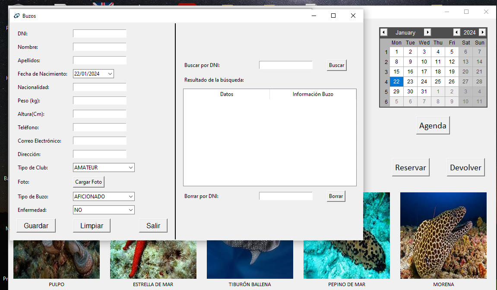
Ficha de alta, consulta y borrado de buceadores.Factura en PDF generada automáticamente con cada reserva.
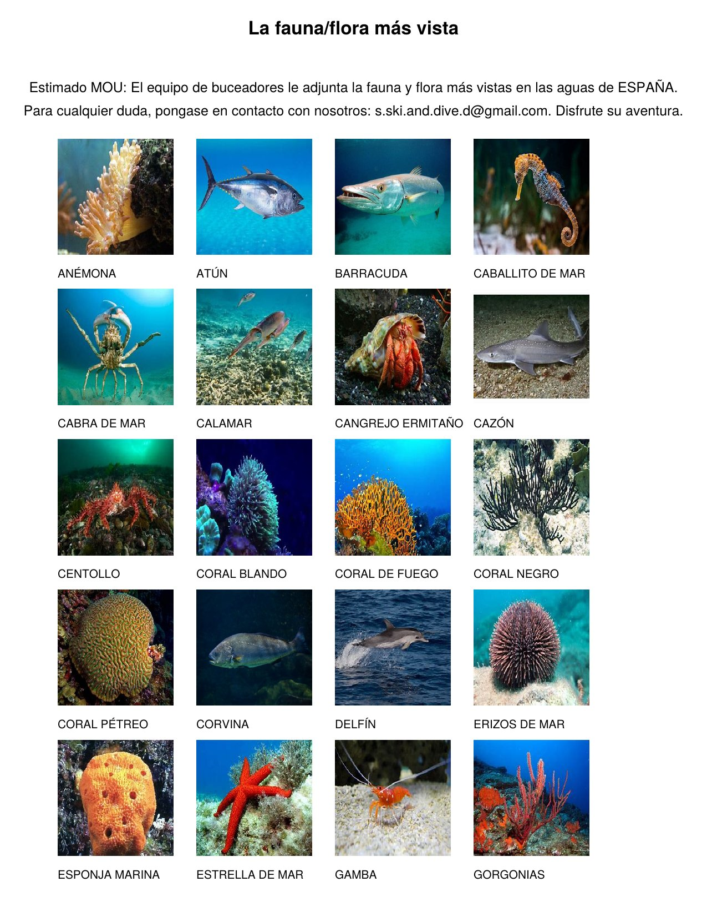
Reserva con generación automática de un PDF personalizado para el cliente con la fauna y flora de su destino.
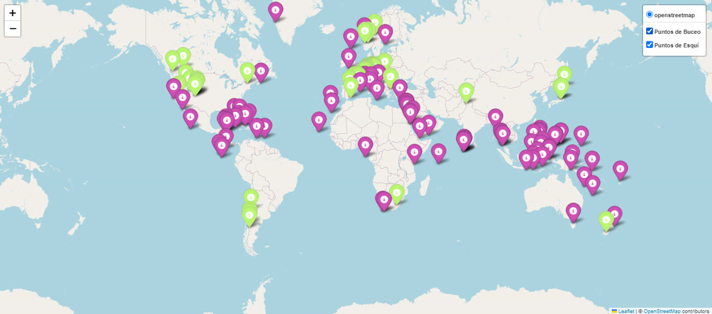
Mapa interactivo con los puntos de buceo y las estaciones de esquí, filtrable por actividad.
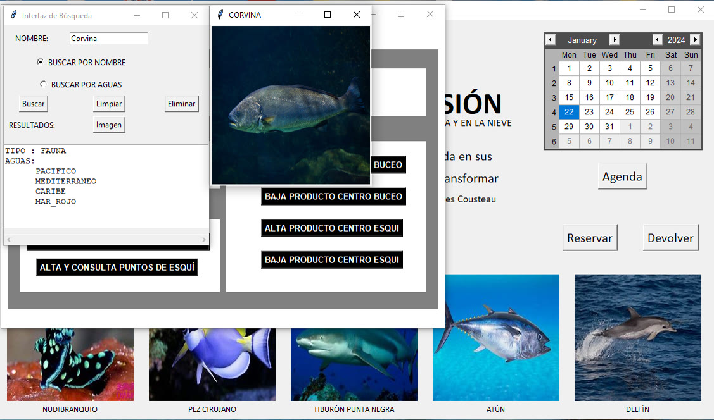
Consulta de especies en la base de datos de fauna marina.
Analítica y machine learning
El módulo de estadísticas está pensado para los departamentos de compras y marketing:
Estadística descriptiva de clientes: edad media, cuartiles, distribución por nacionalidad y por nivel.
Análisis de ventas: gasto medio, ventas por actividad, gasto por nacionalidad y tallas más vendidas.
Segmentación de clientes con K-Means, visualizada en 3D según altura, peso y edad, para identificar grupos con hábitos similares.
Modelo predictivo del gasto según talla, país y actividad, para orientar las campañas hacia los perfiles más rentables.
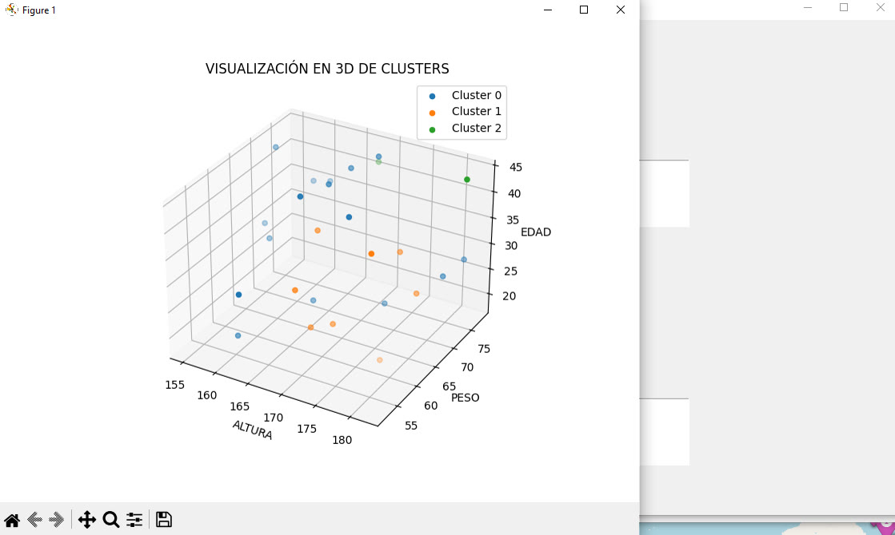
Segmentación de clientes con K-Means en tres dimensiones.
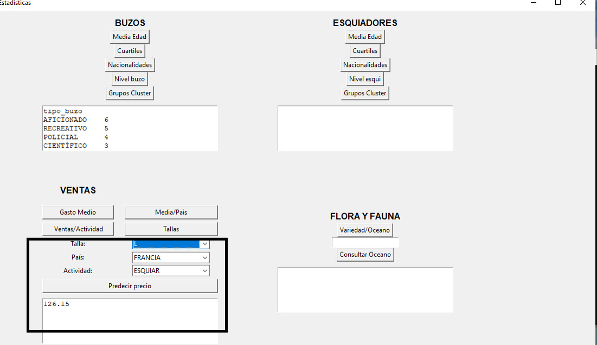
Predicción del gasto según el perfil del cliente.
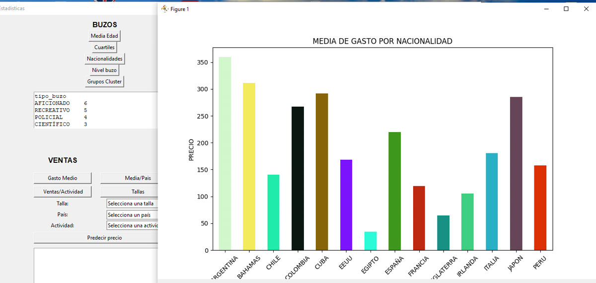
Análisis de ventas: gasto medio por nacionalidad.
Arquitectura
El proyecto está organizado en unos 40 módulos de Python que separan las interfaces, la lógica de negocio, las estadísticas y el acceso a datos. La información se reparte en 9 bases de datos SQLite: clientes, inventarios de cada tipo de centro, fauna y flora, puntos de inmersión, estaciones de esquí y ventas. Todo queda centralizado a través de un gestor de base de datos común.
≈40módulos de Python
9bases de datos SQLite
100+destinos en el mapa
Qué aprendí
Este proyecto me enseñó a diseñar una aplicación completa de principio a fin. Tuve que pensar en cómo se relacionan los datos entre módulos (una reserva afecta al stock, a las ventas y a las estadísticas), construir interfaces usables y convertir datos de negocio en información útil mediante análisis y modelos predictivos.
Proyecto universitario. Desarrollo principal: Mohamed Boulman Mokhlis. Colaboración: S. Veldman Paniego y J. del Junco Sampol. Código disponible bajo petición.
ETSII-UPM · Transferencia de Calor y Método de Elementos Finitos · Trabajo en grupo de 4
Disipador térmico
Diseño y análisis térmico de un disipador para un chip de 65 W
ANSYS Workbench 2025 R2
MATLAB
SpaceClaim
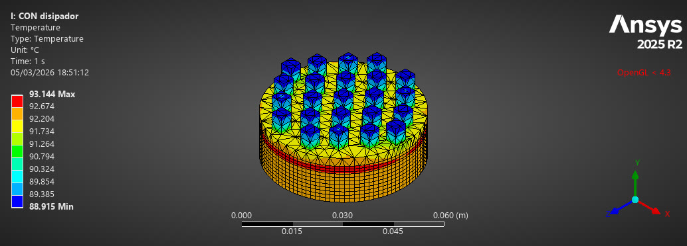
Diseño final: mapa de temperaturas en ANSYS, con un máximo de 93,14 °C en el chip.
Diseño de un disipador de aletas para un chip de 65 W que, sin refrigeración, alcanzaba unos 150 °C, muy por encima de su límite de 95 °C. El reto era bajar la temperatura con una altura total del conjunto limitada a 12 mm.
150 → 93,1 °Ctemperatura del chip
23aletas pin de aluminio
< 0,6 %error MEF 1D frente a 3D
≈ 98 %eficiencia de las aletas
Diagnóstico
Modelo 1D de resistencias térmicas resuelto por elementos finitos en MATLAB. Mostró que el cuello de botella era el área de convección, no la conducción entre capas. Se validó con una simulación 3D en ANSYS, con un error inferior al 0,1 %.
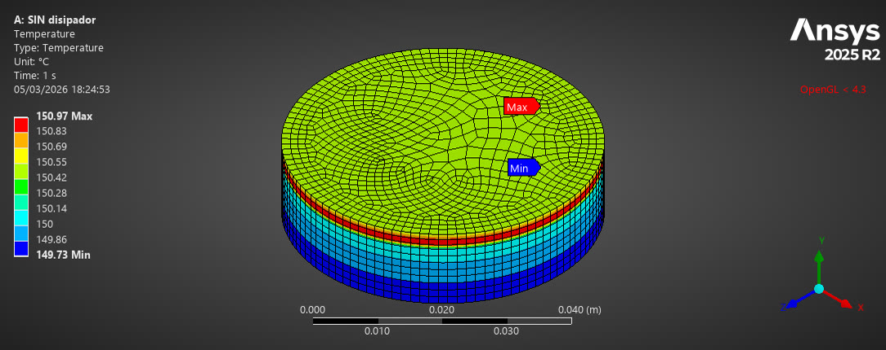
Sin disipador: el chip llega a 150,97 °C.
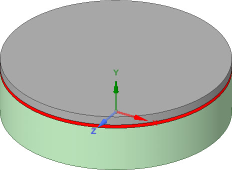
Geometría del conjunto sin disipador.
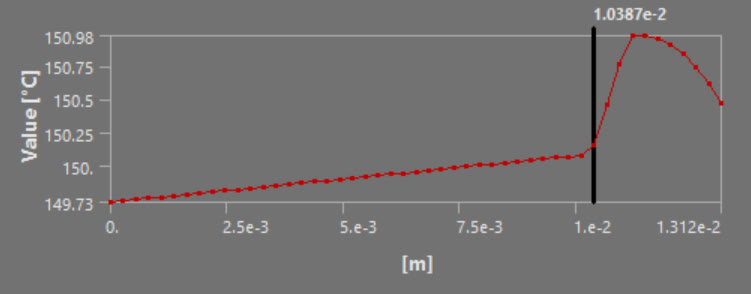
Perfil de temperatura a través de las capas.
Diseño iterativo en ANSYS Workbench
Se probaron 6 configuraciones, variando el número de aletas, su sección y su altura. El diseño final usa 23 aletas pin de aluminio 6061 de 4×4×6 mm y deja el chip en 93,1 °C, unos 2 °C por debajo del límite, con el mínimo material.
Configuración
Aletas
Sección × altura
T. máx. chip
Resultado
1
21
6×6×7 mm
79,3 °C
Cumple mucho material
2
21
4×4×7 mm
91,8 °C
Cumple
3
17
4×4×8 mm
94,3 °C
Cumple margen justo
4
17
4×4×8 mm (otra disposición)
94,8 °C
Cumple margen justo
5
21
4×4×6 mm
96,2 °C
Supera 95 °C
Final
23
4×4×6 mm
93,1 °C
Elegido mínimo material
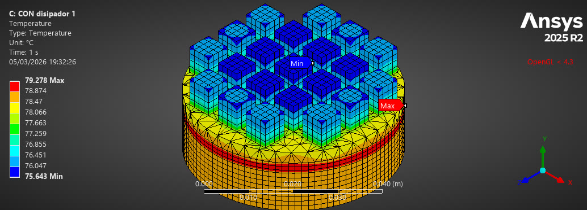
1 · 21 aletas 6×6×7 mm · 79,3 °C
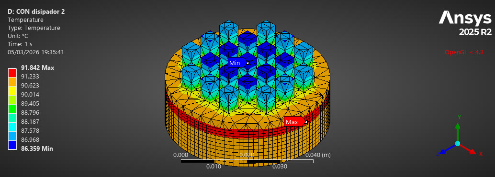
2 · 21 aletas 4×4×7 mm · 91,8 °C
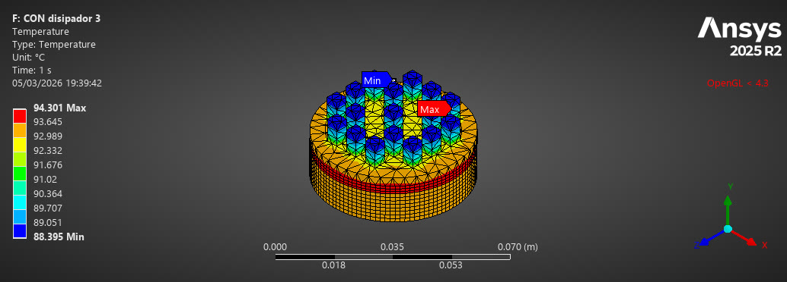
3 · 17 aletas 4×4×8 mm · 94,3 °C
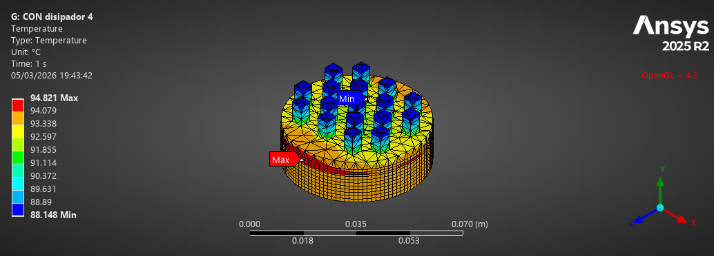
4 · 17 aletas 4×4×8 mm · 94,8 °C
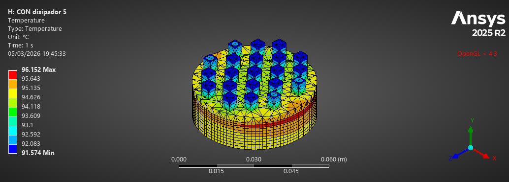
5 · 21 aletas 4×4×6 mm · 96,2 °C
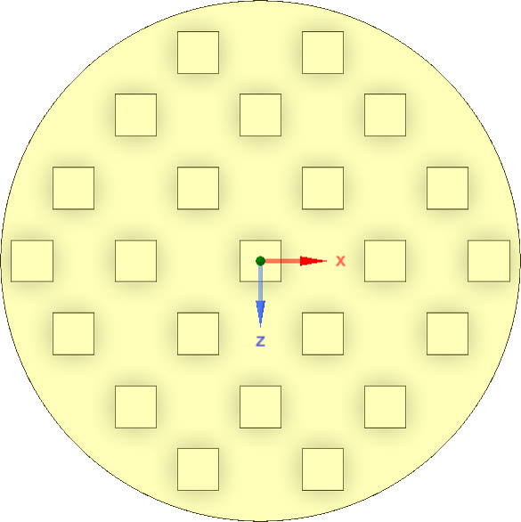
Final · disposición de las 23 aletas en planta.
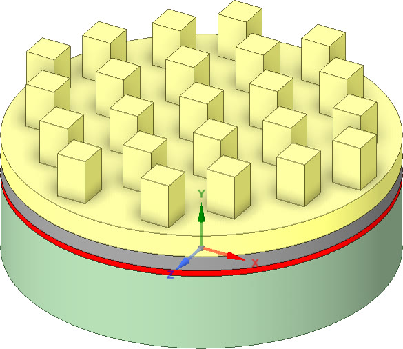
Geometría final: 23 aletas pin de aluminio 6061 de 4×4×6 mm sobre el chip.
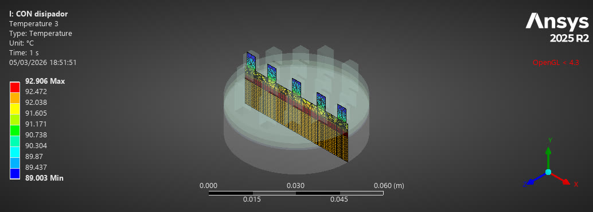
Corte por el plano medio de las aletas.
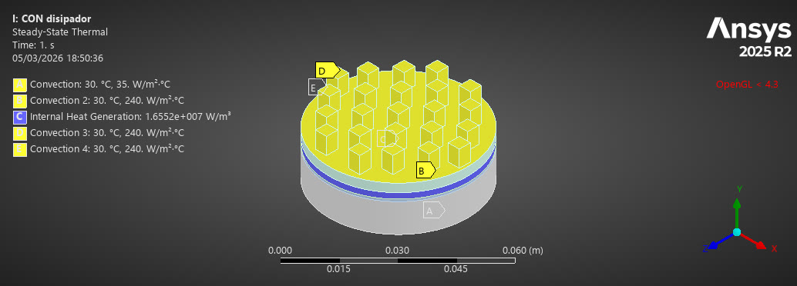
Condiciones de contorno: generación interna de calor y convección.
Validación cruzada
Modelo MEF 1D de 7 nodos, con la convección lateral de las aletas en formulación consistente, frente a la simulación 3D. Las temperaturas coinciden con errores inferiores al 0,6 % y la eficiencia del grupo de aletas es de aproximadamente el 98 %. El análisis de convergencia confirma que el modelo 1D es fiable.
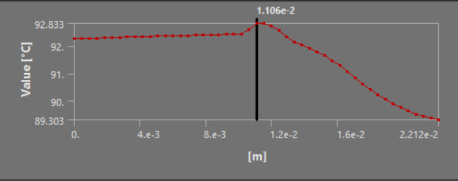
Perfil de temperatura del diseño final, desde la base del chip hasta la punta de las aletas.
Competencias
Formulación y ensamblaje MEF.
Análisis térmico de aletas.
Optimización iterativa.
Validación numérica frente a analítica.
Trabajo en grupo: Mohamed Boulman Mokhlis, Ismael González Gilabert, Rodrigo Arroyo López y Daniel Martín Andrinal · ETSII-UPM · Herramientas: ANSYS Workbench 2025 R2 (Steady-State Thermal), MATLAB y SpaceClaim.
Matemática de la Especialidad · Prácticas
Métodos numéricos
De la raíz al patrón: cuatro prácticas en Python
Python
NumPy
Jupyter
Matplotlib
Gray-Scott, F = 0,029, k = 0,057 · malla 128×128 · t = 0 → 12 000.
Cuatro prácticas resueltas en Python: raíces de ecuaciones, sistemas lineales y no lineales, interpolación, ecuaciones integrales y reacción-difusión. Cada método se programa desde cero, se comprueba su convergencia y se aplica a un problema físico.
4cuadernos Jupyter
14figuras generadas
50×más rápido al vectorizar
Práctica 1
Raíces de ecuaciones: bisección, Newton e híbrido
Tres métodos para resolver f(x) = 0, comparados en velocidad y robustez, y aplicados al cálculo del instante de impacto de un proyectil con rozamiento del aire. El método híbrido hace bisección hasta que el intervalo es pequeño y después Newton; si un paso de Newton sale del intervalo, se rechaza y se repite la bisección con la mitad de tolerancia.
Método
Iteraciones
Convergencia
Bisección
49
lineal (÷2 por paso)
Newton, x₀ = −1,5
5
cuadrática
Híbrido
6
cuadrática al final, sin salir del intervalo
Error en escala semilogarítmica para f(x) = x³ − 2x + 1. La bisección es una recta; Newton y el híbrido caen en picado.Desde x₀ = 0, Newton converge a la raíz equivocada (0,618). El híbrido lo evita porque nunca sale del intervalo.Tiro parabólico con rozamiento F = −βv (v₀ = 50 m/s, θ = 45°). Al pasar de β = 0 a 0,5 kg/s el alcance cae de 254,8 m a 65,4 m.
Práctica 2
Gauss-Seidel y Newton para sistemas
Gauss-Seidel converge si y solo si el radio espectral de su matriz de iteración es menor que 1. Se comprueba la cota del error comparando pendientes en escala logarítmica y se aplica a una cadena de 10 muelles. Después, Newton multivariable resuelve la intersección de dos cónicas y el equilibrio de una masa colgada de dos muelles.
Matriz
Diag. dominante
SPD
ρ(TGS)
Resultado
A₁
no
no
4,000
Diverge
A₂
sí
sí
0,179
Converge 18 it.
Muelles
débil
sí
0,921
Converge ~340 it.
El error sigue la pendiente de ρᵏ: crece como 4ᵏ para A₁ y decae por debajo de la cota para A₂.Cadena de 10 muelles. Una fuerza puntual produce un desplazamiento triangular: la función de Green del laplaciano discreto.Intersección de x² + y² = 1 y 5x² + 21y² = 9: cuatro puntos iniciales llevan a las cuatro raíces en 6 iteraciones.Masa colgada de dos muelles, resuelta por continuación de m = 5 a m = 0.
Práctica 3
Interpolación y ecuación integral de Volterra
Polinomio de Lagrange con denominadores precalculados, spline cúbica natural y regla del trapecio para una ecuación integral de Volterra. Con la forma baricéntrica, evaluar el polinomio pasa de O(n²) a O(n) por punto.
Interpolante (11 nodos)
Error máximo
Lagrange equiespaciado
1,916
Lagrange, nodos de Chebyshev
0,109
Spline cúbica natural
0,022
Fenómeno de Runge con f(x) = 1/(1 + x²): el polinomio de grado 10 oscila en los extremos; la spline sigue la curva.Con más nodos equiespaciados, Lagrange empeora exponencialmente y la spline mejora.Volterra con solución exacta cos t: error de 2·10⁻⁴ con N = 400 y orden observado 2,02.
Práctica 4
Patrones de Turing: modelo de Gray-Scott
Reacción-difusión en 2D con Euler explícito, laplaciano de 5 puntos y condiciones periódicas. Una mancha central se convierte en un patrón que llena el dominio. La condición de estabilidad da Δt·D·(1/Δx² + 1/Δy²) = 0,032 ≤ 0,5.
Se corrigieron cuatro errores del código entregado: el sangrado del laplaciano, las reacciones que devolvían listas en vez de arrays, un paso de más en la simulación y el GIF que no partía de la condición inicial.
Se añadió una versión vectorizada con np.roll, con el mismo resultado y 50 veces más rápida.
Parámetros de la práctica (50×50, F = 0,04, k = 0,06): el cuadrado inicial se expande en un anillo.Extensión a tiempos largos: formación de un laberinto.Malla 128×128, t = 12 000. Pequeños cambios en (F, k) seleccionan rayas, coral, laberintos o manchas.Condición inicial y campos u y v tras 1000 pasos (t = 100).
Matemática de la Especialidad · Cuadernos disponibles bajo petición.
Matemáticas de la Especialidad · G.I.T.I. · Práctica 4
MEF para una barra axial
Programación del método de elementos finitos para una barra axial en régimen estacionario
MATLAB
Elementos finitos
Integración gaussiana
Desplazamientos de la barra, con y sin las fuerzas puntuales. Los puntos son los 12 nudos de la malla y las bandas de color, los 5 elementos.
El objetivo era programar en MATLAB la resolución por el método de elementos finitos de una barra de 1 m sometida a carga axial, y obtener los desplazamientos en todos los nudos. La barra tiene un módulo de elasticidad que varía a lo largo de ella, una fuerza distribuida, dos fuerzas puntuales de 22 MN y 20 MN, y desplazamientos impuestos en los dos extremos (1,7 mm y 2,3 mm).
5elementos de 3 tipos
12nudos
9,28 mmdesplazamiento máximo
Qué hace el programa
Funciones de base. La función FunBase devuelve las funciones de forma y sus derivadas en el elemento estándar [−1, 1] para elementos lineales, cuadráticos y cúbicos de Lagrange.
Integración numérica. Las integrales de cada elemento se calculan con cuadratura de Gauss de 3 puntos.
Ensamblaje. Se construyen la matriz de rigidez K y el vector de fuerzas F, aprovechando la simetría de K.
Cargas y condiciones de contorno. Las fuerzas puntuales y las condiciones de Neumann se reparten entre los nudos del elemento con las funciones de forma; las condiciones de Robin suman además un término a K.
Condiciones esenciales. Los desplazamientos impuestos se introducen con el Método 3 exacto, que transforma K·d = F en un sistema equivalente que ya se puede resolver.
Elemento
Intervalo (m)
Tipo
Nudos
E1
0 – 0,2
Lineal
2
E2
0,2 – 0,5
Cuadrático
3
E3
0,5 – 0,7
Cúbico de Lagrange
4
E4
0,7 – 0,85
Cuadrático
3
E5
0,85 – 1
Cúbico de Lagrange
4
Funciones de forma que devuelve FunBase en el elemento estándar. Cada una vale 1 en su nudo y 0 en los demás.
Código: funciones de base
function [funbase,derfunbase]=FunBase(psi,a)
%% Funciones de base y sus derivadas para el elemento estandar [-1,1]
% psi es un vector fila en el que cada elemento representa un punto.
% funbase es una matriz en la que la fila i contiene el valor de la funcion
% de forma i en los puntos definidos por psi.
% derfunbase es una matriz en la que la fila i contiene el valor de la
% derivada de la funcion de forma i en los puntos definidos por psi.
% a=1 indica que el elemento es lineal
% a=2 indica que el elemento es cuadratico
% a=3 indica que el elemento es cubico de Lagrange
numpuntos=size(psi,2);
if a==1 %verdad si el elemento es lineal
funbase=zeros(2,numpuntos);
funbase(1,:)=(1/2)*(1-psi);
funbase(2,:)=(1/2)*(1+psi);
%
derfunbase=zeros(2,numpuntos);
derfunbase(1,:)=-1/2*ones(size(psi));
derfunbase(2,:)=1/2*ones(size(psi));
elseif a==2 %verdad si el elemento es cuadratico
funbase=zeros(3,numpuntos);
funbase(1,:)=(1/2)*psi.*(psi-1);
funbase(2,:)=1-psi.^2;
funbase(3,:)=(1/2)*psi.*(psi+1);
%
derfunbase=zeros(3,numpuntos);
derfunbase(1,:)=psi-1/2;
derfunbase(2,:)=-2*psi;
derfunbase(3,:)=psi+1/2;
elseif a==3 %verdad si el elemento es cubico de lagrange
funbase=zeros(4,numpuntos);
funbase(1,:)=-(9/16)*(psi+1/3).*(psi-1/3).*(psi-1);
funbase(2,:)=(27/16)*(psi+1).*(psi-1/3).*(psi-1);
funbase(3,:)=(-27/16)*(psi+1).*(psi+1/3).*(psi-1);
funbase(4,:)=(9/16)*(psi+1).*(psi+1/3).*(psi-1/3);
%
derfunbase=zeros(4,numpuntos);
derfunbase(1,:)=(-27/16)*psi.^2+(9/8).*psi+1/16;
derfunbase(2,:)=81/16*psi.^2-(9/8).*psi-27/16;
derfunbase(3,:)=-81/16*psi.^2-(9/8).*psi+27/16;
derfunbase(4,:)=27/16*psi.^2+(9/8).*psi-1/16;
end
Código: ensamblaje y resolución
El núcleo de MEF_BarraAxial_02_Calculos.m: integración de Gauss en cada elemento, ensamblaje de K y F, reparto de las fuerzas puntuales, condiciones de Robin y Método 3 exacto para imponer los desplazamientos.
%% Ensamblaje de la contribución de cada elemento a Kbarra y a Fbarra
for e=1:s
ne=TIPELEM(e)+1; % número de nudos del elemento (2, 3 o 4)
nudos=CON(e,1:ne); % numeración global de los nudos del elemento
a=MALLA(e); b=MALLA(e+1); % extremos del elemento
J=(b-a)/2; % jacobiano del cambio x = a + (psi+1)*J
xint=a+(psinudint+1)*J; % puntos de integración en el elemento real
[N,dNdpsi]=FunBase(psinudint,TIPELEM(e));
dNdx=dNdpsi/J; % derivadas respecto de x (regla de la cadena)
fint=FuerzaDist(xint); % f en los puntos de integración
AEint=Area(xint).*ModElast(xint); % A*E en los puntos de integración
for i=1:ne
% Integral de f*N_i en el elemento -> Fbarra
Fbarra(nudos(i))=Fbarra(nudos(i))+J*sum(coefint.*fint.*N(i,:));
for j=i:ne
% Integral de A*E*N_i'*N_j' en el elemento -> Kbarra (usando simetría)
kij=J*sum(coefint.*AEint.*dNdx(i,:).*dNdx(j,:));
Kbarra(nudos(i),nudos(j))=Kbarra(nudos(i),nudos(j))+kij;
if j~=i
Kbarra(nudos(j),nudos(i))=Kbarra(nudos(j),nudos(i))+kij;
end
end
end
end
%% Incorporación al vector Fbarra de las contribuciones de Fpunt
% (fuerzas puntuales + condiciones de Neumann + términos R de las condiciones de Robin)
nfuerpunt=size(Fpunt,1); % número total de fuerzas puntuales
for k=1:nfuerpunt
xk=Fpunt(k,1); % punto de aplicación
Pk=Fpunt(k,2); % valor de la fuerza
if xk<MALLA(1) || xk>MALLA(end)
warning('La fuerza puntual %d (x = %g) está fuera de la barra y no se aplica.',k,xk);
continue
end
% Elemento que contiene a xk (si xk es el extremo derecho, el último elemento)
e=find(xk<MALLA,1)-1;
if isempty(e), e=s; end
e=max(e,1);
ne=TIPELEM(e)+1;
nudos=CON(e,1:ne);
a=MALLA(e); b=MALLA(e+1);
psik=2*(xk-a)/(b-a)-1; % coordenada de xk en el elemento estándar
Nk=FunBase(psik,TIPELEM(e)); % funciones de base evaluadas en psik
Fbarra(nudos)=Fbarra(nudos)+Pk*Nk; % reparto de la fuerza entre los nudos
end
%% Incorporación a Kbarra de las contribuciones de las condiciones de Robin
for k=1:length(indCondRobin)
i=indCondRobin(k);
Kbarra(i,i)=Kbarra(i,i)+valorCCondRobin(k);
end
%% USO DEL MÉTODO III exacto.
% A partir de Kbarra*dbarra=Fbarra se construye el sistema "verdadero"
% Kaux*dbarra=Faux, que tiene en cuenta las condiciones esenciales.
Kaux=Kbarra;
Faux=Fbarra-Kbarra(:,inddD)*dD; % pasamos al término independiente los desplazamientos conocidos
Kaux(inddD,:)=0; % filas y columnas de los nudos con desplazamiento dato...
Kaux(:,inddD)=0;
Kaux(sub2ind([n n],inddD,inddD))=1; % ...se sustituyen por la identidad
Faux(inddD)=dD; % y en esas componentes el término independiente es el dato
%% Resolución del sistema "verdadero" Kaux*dbarra=Faux
dbarra=Kaux\Faux % cálculo de los desplazamientos en los nudos
Resultados
Sin fuerzas puntuales, el desplazamiento crece casi linealmente entre los dos valores impuestos en los extremos. Al añadir las fuerzas de 22 MN y 20 MN, la barra se desplaza hasta 9,28 mm en la zona central. Los desplazamientos y el vector de fuerzas obtenidos coinciden con los valores de validación del enunciado en todas las cifras mostradas.
Matemáticas de la Especialidad · Grado en Ingeniería en Tecnologías Industriales.
Matemáticas de la Especialidad · G.I.T.I. · Práctica 1
Sistema de muelles 1D
Enfoque directo de la rigidez para la estática de un sistema mecánico unidimensional
MATLAB
Método de la rigidez
Álgebra matricial
Sistema de 8 muelles libre (arriba) y cargado (abajo, desplazamientos amplificados 500 veces). Los cuadrados son los nudos con desplazamiento impuesto.
Programa en MATLAB que resuelve un sistema de muelles en una dimensión. En cada nudo se conoce o el desplazamiento o la fuerza aplicada, y el programa calcula lo que falta: el desplazamiento y la fuerza en todos los nudos, las coordenadas finales y la deformación de cada muelle.
8muelles
9nudos
3desplazamientos impuestos
Qué hace el programa
Ensamblaje de la matriz de rigidez. Cada muelle aporta su matriz elemental 2×2 a la matriz global K según la matriz de conectividad.
Resolución con datos mezclados. El sistema K·d = F tiene datos e incógnitas tanto en d como en F. Se resuelve con el Método 3, que lo transforma en un sistema equivalente con todas las incógnitas en un lado.
Posprocesado. Se calculan las coordenadas finales de los nudos y la deformación unitaria de cada muelle con diff.
Nudo
Desplazamiento (mm)
Fuerza (kN)
Dato conocido
1
0
−16,796
desplazamiento
2
0,8398
0
fuerza
3
1,3997
2,000
fuerza
4
1,7520
0
fuerza
5
2,3000
97,324
desplazamiento
6
0,6494
−2,600
fuerza
7
−1,4000
−83,928
desplazamiento
8
−1,2710
0
fuerza
9
−1,1171
4,000
fuerza
Ejercicio: ¿son válidos los resultados?
Un sistema de 5 muelles se resuelve con dos juegos de datos. En el segundo, los desplazamientos impuestos son 10 veces mayores y las fuerzas 100 veces mayores que en el primero.
En el primer caso todas las deformaciones están por debajo del 0,5 %. En el segundo, el muelle 3 se alarga un 45 % y el muelle 5 se acorta un 30 %. El modelo supone deformaciones pequeñas y comportamiento lineal de los muelles, así que con esas deformaciones los resultados ya no son fiables, aunque el cálculo matemático sea correcto.
Izquierda: deformación unitaria de cada muelle en los dos apartados. Derecha: el sistema del apartado 2 a escala real, donde la deformación se ve sin amplificar.
Matemáticas de la Especialidad · Grado en Ingeniería en Tecnologías Industriales.
Teoría de Máquinas y Mecanismos · Equipo T1-17 · Trabajo en grupo de 4
Grúa de puerto
Diseño en Inventor y análisis cinemático y dinámico de una grúa para elevación de carga
Autodesk Inventor
Simulación dinámica
Excel
Ensamblaje completo del mecanismo en Autodesk Inventor.Esquema del mecanismo: barras 2 a 5, corredera 6 accionada por el cilindro hidráulico y carga F en el punto A.
Elegimos la grúa de puerto porque la carga y descarga de mercancías es una pieza clave de la cadena de suministro. Partiendo del esquema simplificado del enunciado, llevamos el mecanismo a escala real (500:1) usando como referencia las fichas técnicas de fabricantes de grúas portuarias, y lo modelamos y simulamos en Autodesk Inventor.
261,7 mm/svelocidad del punto A
45,7°rango de giro de la barra 2
0,74 %error entre simulación y cálculo gráfico
Medidas a escala real
Pieza
Medida en el dibujo (mm)
Medida real (m)
Barra 2
75
37,5
Barra 3
62
31
Barra 4
82
41
Barra 5
23
11,5
Pieza 6 (corredera)
27,3
13,65
Diseño de las piezas
Cada pieza se modeló por separado y se ensambló con uniones de revolución y una prismática para la corredera. Las secciones se estimaron a partir de las tensiones normal y cortante con la carga máxima. Los agujeros de las articulaciones que transmiten más carga tienen menor diámetro, para dejar más área de material y reducir la tensión en esa zona.
Base o soporte.Barra 2.Barra 3.Barra 4.Barra 5.Corredera (pieza 6).
Estudio cinemático
Con una velocidad de 20 mm/s en la corredera, se simularon 2 segundos de movimiento desde la posición límite inferior. La velocidad del punto A se mantiene casi constante y llega a 261,73 mm/s (unos 15,6 m/min, un valor realista para este tipo de grúas). El cinema de velocidades dibujado a mano da 263,68 mm/s, un 0,74 % de diferencia.
Lanzando simulaciones largas en los dos sentidos se encontraron las posiciones límite: la barra 2 puede girar entre 105,3° y 151,1°, un rango de 45,7°. Más allá, las trayectorias de las barras se cruzan. Para evitarlo proponemos un mecanismo más compacto, ajustar los ángulos o añadir topes físicos.
Velocidad del punto A durante los 2 s de simulación.Cinema de velocidades hecho a mano para validar la simulación.
Estudio dinámico
En el punto A se aplica una carga vertical de 23 808 N. Por el principio de las potencias virtuales, la fuerza hidráulica teórica para mantener el equilibrio es de 9 487 N. La simulación da 6 987 N: la diferencia se debe a que Inventor asigna masa e inercia a cada barra (unas 8 toneladas la barra 2), y esas fuerzas de inercia no estaban en el cálculo teórico.
Después añadimos rozamiento seco acero-acero (μ = 0,8) en la unión prismática. La fuerza del cilindro sube a entre 12 563 N y 12 806 N en los 2 s, y en una simulación de 80 s varía entre 12 990 N y unos 14 360 N.
Con rozamiento: fuerza del cilindro hidráulico (rojo) frente a la carga en A (azul).Fuerza del cilindro en una simulación de 80 s.Masa e inercia que Inventor asigna a la barra 2.
Qué aprendí
A llevar un mecanismo del esquema a un modelo 3D a escala real, a validar una simulación con un método gráfico independiente y, sobre todo, la importancia de las resistencias pasivas y de las inercias: sin ellas, la fuerza que debe dar el cilindro sale muy por debajo de la real.
Equipo T1-17: Mohamed Boulman Mokhlis, Ines Chardonnel, Zoé Corlay y Alexandre Renaud Prioretti · Teoría de Máquinas y Mecanismos.
Automatización de la Fabricación y Robótica · Trabajo I · Trabajo en grupo de 3
Automatización neumática
Secuencia A+B+C+C−A−B− aplicada al llenado de latas de pintura
AutoSIM-200
SMC Model Selection
Método sistemático
Simulación del circuito: los tres cilindros completan la secuencia A+B+C+C−A−B−. Pulsa para reproducir.
El trabajo consistía en diseñar un circuito neumático que ejecute la secuencia A+B+C+C−A−B− con tres cilindros, simularlo y proponer una aplicación real. Elegimos una estación de llenado de latas de pintura: el cilindro A baja el depósito, B abre la válvula de llenado y C controla el llenado; después todo vuelve a su posición en orden inverso.
3cilindros de doble efecto
6finales de carrera
2grupos de actuación
Etapa
Movimiento
Acción en la estación de llenado
Grupo
1
A+
Baja el depósito hasta la lata
I
2
B+
Se abre la válvula de llenado
I
3
C+
Empieza el llenado de la lata
I
4
C−
Se corta el llenado
II
5
A−
Sube el depósito
II
6
B−
Se cierra la válvula y entra una lata nueva
II
1Inicio del ciclo: lata en posición y depósito arriba.2Final del llenado: el depósito ha bajado y la lata está llena.3Ascenso del depósito: vuelve arriba y la lata queda lista para el sellado.
Diseño del circuito
Con el método convencional, cada final de carrera activaría directamente la válvula del siguiente cilindro. Pero en esta secuencia el cilindro C sale y entra seguido, y las señales se bloquean entre sí. Por eso se usó el método sistemático: la secuencia se divide en dos grupos sin cilindros repetidos (A+B+C+ y C−A−B−), cada grupo tiene su línea de presión, y una válvula de memoria activa una línea y pone la otra a escape.
Tres cilindros de doble efecto, porque hacen fuerza en la salida y en el retorno y permiten controlar bien la velocidad y la posición del vástago.
Válvulas 5/2 con pilotaje neumático, con silenciadores de escape para reducir el ruido.
Seis finales de carrera que detectan la posición de cada vástago y dan paso a la etapa siguiente.
Una función AND para el inicio de ciclo: solo arranca si B está recogido y se pulsa el mando manual.
Esquema neumático del sistema, con los finales de carrera de cada cilindro.
Mejoras sobre el esquema
Sobre el esquema básico añadimos tres cambios. Canalizamos los escapes en una sola línea, lo que ahorra tuberías y espacio pero hace más difícil localizar una fuga. Canalizamos también la alimentación. Y añadimos un pulsador de emergencia para poder parar el llenado si algo falla en la instalación.
Esquema final simulado.Esquema con escapes y alimentación canalizados y pulsador de emergencia.
Selección de componentes comerciales
Con el programa de selección de SMC dimensionamos el conjunto cilindro-válvula. Supusimos una pintura de 1000 kg/m³, una carga de 50 kg en vertical, una carrera de 400 mm en 2 s, rozamiento de deslizamiento de 0,1 y una presión de 0,5 MPa. El programa propone el cilindro CA2L de 50 mm de diámetro, la electroválvula SYJ712, silenciadores, tubos y racores. La velocidad y el desplazamiento del vástago resultan suaves y cumplen los parámetros.
Datos de entrada en el programa de selección de SMC.Resultados: curvas de velocidad, desplazamiento y presión, y componentes seleccionados.
Trabajo en grupo: Giovanni Nogueira Catelli, Mohamed Boulman Mokhlis y Walter Luiggi Pérez Dávila.
Automatización de la Fabricación y Robótica · Trabajo II · Equipo 7 · ETSII
Programación de un PLC
Control de dos cilindros neumáticos con un Siemens S7-1200 en lenguaje Ladder
TIA Portal
Ladder
Siemens S7-1200
PLCSIM
Red 3 del programa en Ladder: B+, A− y B−, cada paso confirmado por los sensores inductivos.
El objetivo era programar un PLC Siemens S7-1200 con TIA Portal para controlar dos cilindros neumáticos de un panel del laboratorio. Partimos de una aplicación básica y fuimos añadiendo funciones una a una. Cada paso se probó en el panel real bajo la supervisión de la profesora.
4 + 1funciones y una mejora propia
11redes Ladder
10entradas y salidas
Componente
Dirección
Tipo
Botón
I0.0
Entrada
Selector
I0.1
Entrada
Inductivo A+
I0.2
Entrada
Inductivo A−
I0.3
Entrada
Inductivo B+
I0.4
Entrada
Inductivo B−
I0.5
Entrada
LED blanco
Q0.0
Salida
LED de color
Q0.1
Salida
Pilotaje cilindro A
Q0.2
Salida
Pilotaje cilindro B
Q0.3
Salida
Paso 1
Aplicación básica: secuencia A+B+A−B−
Al pulsar el botón, los cilindros hacen la secuencia A+B+A−B− y al final se enciende el LED blanco. Cada movimiento se activa con bobinas SET y RESET cuando los sensores inductivos confirman que el cilindro anterior ha llegado a su posición. Añadimos una marca auxiliar END porque en la primera prueba el LED blanco se encendía antes de que el último cilindro terminara de recogerse.
Red 1: arranque de la secuencia con el botón.Red 2: salida del cilindro A (A+).Red 6: encendido del LED blanco al terminar, común a las dos secuencias.
Paso 2
Repetir la secuencia y contar 5 ciclos
La secuencia se puede repetir pulsando otra vez el botón. Un contador ascendente (CTU) suma una unidad al final de cada secuencia y, al llegar a 5, enciende el LED de color para indicar fin de ciclo. El propio LED de color reinicia el contador.
Red 7: contador CTU con valor de preselección 5.
Paso 3
Rearme manteniendo el botón 5 segundos
Con el LED de color encendido, hay que mantener pulsado el botón 5 segundos para poder empezar un nuevo ciclo. Un temporizador con retardo a la conexión (TON) cuenta ese tiempo y después apaga los dos LEDs.
Red 8: temporizador TON de 5 s para el rearme.
Paso 4
Selector de secuencia
Con el selector, el operario elige entre la secuencia A+B+A−B− y la secuencia B+A+B−A−. La segunda sigue la misma lógica que la primera, con el orden de los cilindros cambiado.
Red 5: secuencia alternativa B+A+B−A−.
Mejora propia
Aviso si se cambia el selector a mitad de ciclo
Pensamos en una planta real: un operario nuevo cambia el selector mientras el responsable, lejos del panel, no lo ve. La mejora tenía que usar solo los componentes del panel, así que si el selector cambia durante el ciclo, los dos LEDs parpadean alternándose cada 0,5 s. Al devolver el selector a su posición, el programa debía seguir contando la secuencia en la que estaba.
El parpadeo funcionó en el laboratorio. La vuelta del selector a su posición no dejaba continuar la secuencia anterior y había que empezar de nuevo. Después encontramos la causa: en la red 9 faltaba poner a cero la marca de secuencia y los dos LEDs. La versión corregida es la última imagen.
Lógica de la mejora.Red 11: parpadeo alterno de los LEDs con dos temporizadores TON de 0,5 s.Red 9: detección del cambio de selector por flanco de subida o de bajada.Red 10: contador que controla el modo de cambio.Red 9 corregida: los resets añadidos (en rosa) resuelven el fallo encontrado en la prueba.
Diagrama de conexiones
Las entradas (botón, selector y los cuatro sensores inductivos) van al bloque de entradas de 24 V DC del PLC, y las salidas (los dos LEDs y el pilotaje de las electroválvulas) al bloque de salidas por relé. El programa se carga desde el ordenador por cable Ethernet. Es importante elegir en TIA Portal exactamente el mismo modelo de CPU que el PLC físico, porque si no, el programa no funciona aunque esté bien hecho.
Conexiones de los componentes al PLC, alimentación eléctrica y neumática.PLC Siemens S7-1200 1215C del laboratorio.
Equipo 7: Mohamed Boulman Mokhlis, Giovanni Nogueira Catelli, Mohamed El Rhorfi y Walter Luiggi Pérez Dávila · Automatización de la Fabricación y Robótica.
Automatización de la Fabricación y Robótica · Tarea 3 · Equipo 7 · ETSII
Inspección y control de calidad
Clasificación automática de piezas con una cámara de visión artificial
SOPAS Engineering
Visión artificial
Matriz de confusión
Modelo de referencia: el contorno de la pieza y los cuatro agujeros detectados por la cámara.
El objetivo era configurar una cámara de visión artificial para que, de un banco de 15 imágenes, reconociera como buenas las 6 piezas correctas de cuatro agujeros y descartara las demás. En Estadística habíamos calculado muchas veces la probabilidad de encontrar piezas defectuosas; aquí vimos cómo se detectan de verdad en una línea de producción.
6 / 6piezas buenas detectadas
9 / 9piezas descartadas correctamente
147ciclos de prueba sin cambios
Configuración del modelo
Cada miembro del equipo preparó su propio modelo con una imagen de referencia distinta y nos quedamos con el que mejor funcionaba. El campo de visión circular detectaba la forma de la pieza sin tocar el contraste; con el rectangular, los agujeros aparecían deformados. Usamos la luz interna de la cámara.
Además de la forma, el modelo mide el diámetro de los cuatro agujeros y la distancia de cada uno al centro de la pieza. Así se asegura que la pieza no solo tiene cuatro agujeros, sino que tienen el tamaño y la posición correctos. Las tolerancias se ajustaron a 10 px en los diámetros y 20 px en las distancias, porque con márgenes más estrechos algunos círculos pequeños se detectaban mal.
Imagen de referencia en SOPAS Engineering con el campo de visión circular.Caracterización de la pieza: forma, cuatro círculos y cuatro distancias.Resultado de una pieza buena: diámetros y distancias dentro de tolerancia.Margen para el diámetro de los agujeros.Margen para las distancias al centro.
Salidas digitales
La cámara tiene dos salidas activas: pieza correcta y pieza descartada. La salida de "fallo de detalle" se desactivó: estaría pensada para piezas de cuatro agujeros con agujeros de otro tamaño o mal colocados, pero en este banco todas las piezas de cuatro agujeros son buenas. Estas salidas pueden activar directamente un cilindro neumático que mande cada pieza a su cinta.
Salida 1: pieza correcta. Salida 2: pieza descartada.Estadísticas tras 147 ciclos: 40 % de piezas correctas y 60 % descartadas, igual que en el banco de imágenes.
Validación con la matriz de confusión
La matriz de confusión compara, imagen por imagen, lo que decide el sistema con lo que la pieza es en realidad. Como aquí solo hay dos clases (buena o defectuosa), es una matriz de 2×2 con cuatro casillas:
Verdadero positivo (TP): la pieza es buena y el sistema la acepta.
Verdadero negativo (TN): la pieza es defectuosa y el sistema la descarta.
Falso positivo (FP): la pieza es defectuosa pero el sistema la acepta. Es el error más grave en control de calidad, porque una pieza mala llega al cliente.
Falso negativo (FN): la pieza es buena pero el sistema la descarta. Se pierde una pieza válida y sube el coste.
Predicción: buena
Predicción: descartada
Real: buena
6 (TP)
0 (FN)
Real: defectuosa
0 (FP)
9 (TN)
A partir de la matriz se calculan tres indicadores:
Precisión = TP / (TP + FP) = 6 / 6 = 100 %. De las piezas que el sistema acepta, cuántas son realmente buenas.
Sensibilidad = TP / (TP + FN) = 6 / 6 = 100 %. De las piezas buenas que existen, cuántas encuentra el sistema.
Exactitud = (TP + TN) / total = 15 / 15 = 100 %. Qué parte de todas las decisiones es correcta.
El modelo clasifica bien las 15 imágenes, sin falsos positivos ni falsos negativos. Aun así, el banco tiene solo 15 imágenes y el modelo se ajustó con ellas mismas, así que para confiar en el resultado en una planta real haría falta probarlo con un conjunto de piezas nuevo y mucho más grande.
Aplicación en una planta
Imaginamos una fábrica de bridas DN20 de fundición con cuatro agujeros, que se usan en instalaciones hidráulicas de alta presión. Las piezas pasan por la cámara y, según su salida, un cilindro neumático las envía a la cinta de piezas buenas, que va a otra estación para ensayos de fatiga o impacto, o a la cinta de descartes.
Vista en planta de la estación: cinta de entrada, sistema de inspección, cilindros neumáticos y las dos cintas de salida.
Equipo 7: Mohamed Boulman Mokhlis, Giovanni Nogueira Catelli, Mohamed El Rhorfi y Walter Luiggi Pérez Dávila · Automatización de la Fabricación y Robótica.
Automatización de la Fabricación y Robótica · Trabajo 4 · Equipo 7 · ETSII
Control numérico
Plan de mecanizado y programa ISO para una fresadora vertical CNC
Código ISO (G-code)
CNC Simulator Pro
AutoCAD
Pieza final en el simulador: chaflanes, ranura central con arcos y los seis taladros.
A partir de un bloque en bruto de 350×150×50 mm había que obtener la pieza del plano en una fresadora vertical CNC de 12 kW. Preparamos la hoja de proceso, los croquis de situación de la pieza en cada fase, la selección de herramientas y el programa completo en código ISO, y lo comprobamos en CNC Simulator Pro.
10fases en la hoja de proceso
4herramientas
7sistemas de referencia
Plano de la pieza asignada al grupo.La pieza en 3D.
Hoja de proceso
La hoja de proceso ordena todas las operaciones con su herramienta, la velocidad de avance, la velocidad del husillo y las profundidades de corte, acompañadas de un croquis de cada fase.
Fase
Operación
Herramienta
Husillo (rpm)
Avance (m/min)
10
Posicionamiento de la pieza en la máquina
—
—
—
20
Contorneado lateral (2 pasadas)
Fresa Ø20
3500
1
30
Escuadrado (3 pasadas)
Fresa Ø20
3500
1
40–50
Chaflanes 26×26 y 12×12
Fresa Ø20
3500
0,5
60–70
Planeado de la superficie superior
Fresa Ø20
3500
1
80–90
Escuadrado y fresado de forma con arcos
Fresa Ø20
3500
1
100
Taladrado profundo 3×Ø20
Broca Ø20
4000
0,1
110
Mandrinado de Ø20 a Ø24
Fresa Ø12
4000
0,5
120
Taladrado profundo Ø12
Broca Ø12
4000
0,1
130
Control dimensional: agujeros H7, Ra 1,6 µm, ISO 2768-mK
—
—
—
Croquis de situación de la pieza en la máquina en cada fase, con los orígenes de pieza, máquina y herramienta.Croquis con los puntos característicos de la pieza y su tabla de coordenadas.
Herramientas y sistemas de referencia
T1, fresa Ø20: contorneado, escuadrado, chaflanes, planeado y fresado de forma.
T2, fresa Ø12: mandrinado de los agujeros superiores de Ø20 a Ø24, con calidad IT7.
T3, broca Ø12: taladros inferiores pasantes.
T4, broca Ø20: taladrado previo de los agujeros superiores.
Usamos siete sistemas de referencia: G54 para la pieza en bruto, G55 en la esquina de la pieza ya contorneada, y uno en el centro de cada taladro para no tener que calcular coordenadas a mano en cada uno.
T1: fresa Ø20.T2: fresa Ø12.T4: broca Ø20.
Programa en código ISO
El programa se dividió en fases: contorno lateral, superficie superior con los chaflanes, vaciado de la parte central, arcos y taladros. La parte más difícil fueron los arcos de la ranura central: el plano no daba las cotas de los puntos de tangencia, así que redibujamos la pieza en AutoCAD y los calculamos con un círculo auxiliar. También se añadió una pausa (G04) después de arrancar el husillo para que alcance su velocidad antes de empezar a cortar, y el refrigerante se activa y desactiva en cada taladro.
N10G54G21G90G17; Referencia - mm - coordenadas absolutas - plano XYN20T01D01; Elección de la herramienta (fresa Ø20)N30M06; Cambio de herramientaN40G00X5Y-15Z5;N50G00Z-50; Posicionamiento rápidoN60G41; Compensación de radio a la izquierdaN70M03S3500; Husillo a derechas a 3500 rpmN75G04P2300; Pausa para que el husillo alcance la velocidadN78G94;;----------------- FASE 1: CONTORNO LATERAL -----------------N80G01Y135F1000; Primera pasada (15 mm)N90X335;N100Y15;N110X20;N120Y130; Segunda pasada (5 mm)N130X330;N140Y20;N150X0;N160G40; Cancelación de la compensación de radioN165G55; Nuevo sistema de referencia en la esquina de la pieza;----------------- ARCOS (puntos de tangencia calculados en AutoCAD) -----------------N550G00X24Y120;N560Z-22N570G02X51.8Y96.65R34;N580G01X60Y78;N582G01X175Y78;N584G01X180.4Y92.3;N586G02X208Y108R34;N588G00X286;N590G02X320Y74R34;
G movimientos y modos · M funciones de máquina · T/D herramienta · S/F/P velocidad, avance y tiempo · XYZ coordenadas · R radio del arco
Simulación en CNC Simulator Pro
El programa completo ejecutado en el simulador, desde el bloque en bruto hasta la pieza terminada con todos sus taladros.
Simulación completa del mecanizado (1 min 46 s).
Simulación paso a paso
1Contorno lateral sobre el bloque en bruto.2Superficie superior, altura de 28 mm y chaflanes.3Ranura central con los arcos tangentes.4Taladros: los de Ø20 se amplían a Ø24 y los de Ø12 se hacen pasantes.
Equipo 7: Mohamed Boulman Mokhlis, Giovanni Nogueira Catelli, Mohamed El Rhorfi y Walter Luiggi Pérez Dávila · Automatización de la Fabricación y Robótica.
Simulación de Sistemas Mecánicos · Grupo T09 · Trabajo en grupo de 3
Simulación de una pala cargadora
Modelo mecánico, hidráulico y mixto de una Hitachi ZW150-6
MATLAB
Ecuaciones de Lagrange
Sistemas hidráulicos
AutoCAD
La máquina modelada: pala cargadora Hitachi ZW150-6, con los pares de traslación de los cilindros marcados.
Modelamos en MATLAB el brazo y la cuchara de una pala cargadora real a partir del catálogo del fabricante. El trabajo tenía tres fases: un modelo mecánico multicuerpo, un modelo de los dos sistemas hidráulicos que mueven el brazo y la cuchara, y un modelo mixto que une ambos.
9cuerpos
11pares cinemáticos
2grados de libertad con chasis fijo
27,1 MPapresión máx. simulada (real 29,4)
Modelo mecánico
Las longitudes salieron del catálogo y de la carrera de los cilindros. Las masas se calcularon con la geometría y la densidad del acero, con la cuchara llena de roca (6900 kg) y el chasis como el resto hasta el peso operativo de 12 290 kg. Las inercias se obtuvieron dibujando cada sección en AutoCAD y usando el comando de propiedades físicas.
El mecanismo tiene 9 cuerpos unidos por 9 pares de revolución y 2 de traslación (los cilindros). Planteamos las ecuaciones de restricción de cada par y la Lagrangiana con la energía cinética y potencial de cada cuerpo, y en el último caso también la energía disipada por amortiguadores.
Tres casos de estudio
Caso 1, chasis fijo: todo el mecanismo cae libremente desde una posición alta. Sin rozamientos ni amortiguadores, la energía total se conserva, lo que sirve para validar el modelo.
Caso 2, chasis móvil: el chasis puede moverse sobre las ruedas, modeladas con muelles y amortiguadores.
Caso 3, chasis móvil con muelles en los cilindros: con rigidez en las ruedas de 2,5·10⁶ N/m, calculada para que el chasis no baje más de 2 cm, y amortiguación en los cilindros, la cuchara se queda sujeta arriba como pedía el enunciado. Con valores más bajos la máquina volcaba.
Caso 1: trayectoria del brazo principal.Caso 1: trayectoria del brazo intermedio.Caso 1: trayectoria de la cuchara.
Caso 1: la energía cinética y potencial se intercambian y la energía total se mantiene constante.Caso 3: desplazamientos de todos los cuerpos y fuerzas en los cilindros hidráulicos.
Modelo hidráulico
Cada cilindro (SH1 para el brazo y SH2 para la cuchara) se modeló con su acumulador, válvulas y resistencias. Con los parámetros iniciales, la presión del acumulador de SH1 superaba los 50 MPa y aparecían picos y vibraciones. Tras muchas iteraciones ajustamos los parámetros hasta acercarnos al comportamiento real y reducir las vibraciones de SH2 de 0,08 a 0,009 m/s.
Parámetro (SH1)
Máquina real
Simulación
Tiempo de subida del brazo
6,4 s
6,4 s
Tiempo de bajada del brazo
3,6 s
4,8 s
Presión máxima
29,4 MPa
27,1 MPa
SH1 ajustado: velocidad, desplazamiento, presiones y fuerza en el vástago.SH2 ajustado: las vibraciones se amortiguan en pocos segundos.
Modelo mixto e interfaz
Al unir los dos modelos, el cilindro de la cuchara la vuelca y la devuelve a su sitio, y después el del brazo lo sube y lo baja. Como probar valores de rigidez y amortiguación cambiando el código era muy lento, programamos una interfaz gráfica en MATLAB: permite elegir el caso, cambiar seis parámetros (K1, K2, R1 a R4) y relanzar la simulación. De momento funciona completa para el caso 2.
Animación del modelo mixto: el cilindro SH2 vuelca la cuchara y la devuelve, y después SH1 sube y baja el brazo (1 min 13 s).
Ventana principal de la interfaz.Ventana para cambiar los parámetros y simular.
% Crear la ventana principal
mainFig = uifigure('Name', 'Simulaciones');
movegui(mainFig, 'center'); % Centrar la ventana en la pantalla
mainFig.Position(3:4) = [300 400]; % Ajustar el tamaño de la ventana% Crear pestaña "Mecánica" en la parte superior
tabGroup = uitabgroup(mainFig, 'Position', [0, mainFig.Position(4) - 30, mainFig.Position(3), 30]);
mecanicaTab = uitab(tabGroup, 'Title', 'Mecánica');
% Botón "Simular" en la esquina superior izquierda de la pestaña "Mecánica"
simularButton = uibutton(mecanicaTab, 'Text', 'Simular', 'Position', [10, 10, 80, 30]);
% Función para el botón "Simular"
simularButton.ButtonPushedFcn = @(~,~) simular();
% Función para simularfunction simular()
disp('Simulando...');
% Aquí puedes poner el código para la simulación mecánicaend% Botón "Ver Videos" encima del botón "Simular"
verVideosButton = uibutton(mecanicaTab, 'Text', 'Ver Videos', 'Position', [10, 50, 80, 30]);
% Botón "Ver Gráficas" encima del botón "Ver Videos"
verGraficasButton = uibutton(mecanicaTab, 'Text', 'Ver Gráficas', 'Position', [10, 90, 80, 30]);
% Botón "Cambiar Valores" encima del botón "Ver Gráficas"
cambiarValoresButton = uibutton(mecanicaTab, 'Text', 'Cambiar Valores', 'Position', [10, 130, 80, 30]);
Grupo T09: Mario García López, Mohamed Boulman Mokhlis y Juan del Junco Sampol · Simulación de Sistemas Mecánicos.
Simulación de Sistemas Mecánicos · Práctica 1
Análisis cinemático
Posiciones, velocidades y aceleraciones de un mecanismo plano con MATLAB
MATLAB
Cinemática multicuerpo
Matriz jacobiana
Animación generada por el programa: el punto B se mueve adelante y atrás y arrastra al resto del mecanismo.
El mecanismo tiene tres cuerpos: una barra con un pistón que gira en el punto fijo A (cuerpo 1), el vástago que desliza dentro de ella (cuerpo 2) y una barra que une el punto B con la corredera vertical C (cuerpo 3). El objetivo era plantear todas sus ecuaciones de restricción y simular el movimiento cuando se impone un desplazamiento horizontal al punto B.
3cuerpos móviles
9coordenadas
8 + 1restricciones y driver
1grado de libertad
Enunciado: mecanismo y driver (desplazamiento horizontal del punto B).
Planteamiento
Grados de libertad: 4 sólidos (incluido el fijo) suman 12 coordenadas; el fijo y los pares de rotación y traslación eliminan 11, así que queda 1 grado de libertad, que controla el driver.
Restricciones: una por cada par: revolución en A, traslación del pistón en D (mismo ángulo y vástago alineado), unión en B, B apoyado en el suelo y C en la pared.
Driver: xB = −3e/5 + (2/5)·cos(πt), un vaivén de 0,8 m entre −4,6 y −3,8 m.
Velocidades y aceleraciones: se obtienen resolviendo Φq·q̇ = −Φt y Φq·q̈ = −(Φ̇q·q̇ + Φtt) en cada instante con la matriz jacobiana.
Los cuerpos 1 y 2 giran siempre juntos, porque el par de traslación les obliga a tener el mismo ángulo. Cuando B se mueve, ese ángulo varía unos 4° y el de la barra 3 unos 16°. La velocidad máxima la tiene el vástago, con unos 1,2 m/s.
Driver, ángulos y velocidades durante dos ciclos.
Simulación de Sistemas Mecánicos · Práctica 1 · Entrega individual.
Simulación de Sistemas Mecánicos · Práctica 2
Dinámica de una puerta de garaje
Ecuaciones de Newton-Euler de un mecanismo con muelle y rozamiento, resueltas como sistema DAE en MATLAB
MATLAB
Dinámica multicuerpo
Newton-Euler
ode23t (DAE)
Animación generada por el programa: el brazo OB (rojo) sube hasta la vertical y la puerta AB (verde) termina horizontal, con el rodillo A al final de la guía.
La práctica modela una puerta de garaje basculante vista en sección. La puerta AB es una placa uniforme de longitud 2d; su esquina superior A lleva un rodillo que desliza por una guía horizontal, y su extremo B está articulado a un brazo OB que gira alrededor del punto fijo O. Un muelle une el centro del brazo con un punto situado a d/2 sobre O y ayuda a levantar la puerta; su fuerza es nula cuando el brazo está arriba. A diferencia de la Práctica 1, aquí no basta con la cinemática: hay que plantear las ecuaciones dinámicas e integrarlas en el tiempo.
2sólidos móviles
6coordenadas
5restricciones
17ecuaciones DAE
Enunciado: geometría de la puerta, el brazo OB y el muelle.
Planteamiento
Grados de libertad: dos eslabones suman 6 coordenadas (x, y, φ de cada centro de gravedad). Los pares de revolución en O y B quitan 4 y el par de traslación-rotación del rodillo A quita 1, así que queda 1 grado de libertad.
Restricciones: O fijo, B común a las dos barras y A a la altura de la guía: y2 − d·sen φ2 − d = 0.
Velocidad del rodillo: con el giro del brazo como restricción motriz (φ1 = ω·t) se obtiene xA = x2 − d·cos φ2 y ẋA = ẋ2 + d·sen φ2·φ̇2.
Dinámica: sobre cada sólido actúan su peso, la fuerza del muelle (aplicada en el centro de gravedad de OB, así que no da momento) y un rozamiento lineal −R·ẋA en A. Las reacciones en O, B y A entran como multiplicadores de Lagrange: M·q̈ + ΦqT·λ = Q.
Resolución: el sistema se escribe como M·ẋ = f(t, x) con 17 incógnitas (6 velocidades, 6 posiciones y 5 multiplicadores), se calculan condiciones iniciales consistentes con decic y se integra con ode23t durante 20 s.
Parámetro
Valor
Parámetro
Valor
b (brazo OB)
1 m
d (media puerta)
1 m
M1, J1 (brazo)
60 kg, 60 kg·m²
M2, J2 (puerta)
50 kg, 100 kg·m²
K (muelle)
1470 N/m
R (rozamiento en A)
1200 N·s/m
Código: definición del modelo dinámico
%% Variables: brazo OB (1) y puerta AB (2)
Model.System_variables= {'x1'; 'y1'; 'phi1'; 'x2'; 'y2'; 'phi2'};
%% Kinematic constraints
Model.Constraints = {
'x1 - b/2*cos(phi1)'; % par de revolución en O'y1 - b/2*sin(phi1)';
'x1 + b/2*cos(phi1) - x2 - d*cos(phi2)'; % par de revolución en B'y1 + b/2*sin(phi1) - y2 - d*sin(phi2)';
'y2 -d*(sin(phi2)+1)'}; % rodillo A en la guía (y = d)%% Fuerzas de restricción (multiplicadores de Lagrange)
Model.ConstraintForces = {'Rox'; 'Roy'; 'RBx'; 'RBy'; 'RNa'};
%% Driver (para el análisis de velocidades)
Model.Drivers = {'phi1 - w*t'};
Model.AnalysisType= 'Newton-Euler';
%% Cantidad de movimiento lineal y angular
Model.LinearAngularMomentum = {'M1*x1dot'; 'M1*y1dot'; 'J1*phi1dot';
'M2*x2dot'; 'M2*y2dot'; 'J2*phi2dot'};
%% Fuerzas exteriores: muelle en el centro de OB, pesos y rozamiento lineal en A
Model.Forces = {
'K*(sqrt(x1^2+(y1-b/2)^2)-sqrt(x10^2+(y10-b/2)^2))*(x1)/sqrt(x1^2+(y1-b/2)^2)';
'K*(sqrt(x1^2+(y1-b/2)^2)-sqrt(x10^2+(y10-b/2)^2))*(y1-b/2)/(sqrt(x1^2+(x1+b/2)^2))-M1*g';
'0';
'-R*(x2dot + d*phi2dot*sin(phi2))';
'-M1*g';
'-R*(x2dot +d*phi2dot*sin(phi2))*(d*sin(phi2))'};
%% Tiempo de simulación y solver
Model.t= '[0:0.05:20]';
Model.Solver = 'nonstiffsemiexplicit';
Código: integración de las ecuaciones DAE
%% Número de ecuaciones DAE: velocidades, posiciones y multiplicadores
numberofDAEequations = 2*neq+(neq-ngdl)+neqBG; % 6 + 6 + 5 = 17
x(neq+1:2*neq)= q0; % posición inicial ajustada%% Sistema M·x' = f(t,x) en forma semiexplícita
MassMatrixNewtonEuler = str2func(sprintf('MassMatrixNewtonEuler_%s',Model));
Systemode23t_NewtonEuler = str2func(sprintf('eqNewtonEulerSemiexplicit_%s',Model));
ImplicitDAE = @(time,y,yp) MassMatrixNewtonEuler(q0,time,y)*yp - Systemode23t_NewtonEuler(q0,time,y);
%% Condiciones iniciales consistentes y resolución
[x_0,xp_0,resnrm] = decic(ImplicitDAE,0,x,fixed_x0,xp,fixed_xp0);
options = odeset('Mass', @(time,y) MassMatrixNewtonEuler(q0,time,y), ...'InitialSlope', xp_0, 'RelTol',1.0e-3, 'AbsTol', 1.0e-5);
[t1,x] = ode23t(@(time,y) Systemode23t_NewtonEuler(q0,time,y), tspan, x_0, options);
Resultados
Partiendo con el brazo horizontal y la puerta inclinada 30°, el muelle y los pesos hacen que el brazo suba despacio al principio y se acelere después. En unos 7 s el brazo llega a la vertical (90°), la puerta queda horizontal y el rodillo A recorre la guía desde x = −0,73 m hasta x = −2 m, con una velocidad máxima de unos 1,4 m/s justo antes del final. Al llegar al tope hay un pequeño rebote que el rozamiento amortigua enseguida, y la puerta queda abierta y en reposo. Las reacciones en O, B y A salen directamente de los multiplicadores de Lagrange.
Ángulos de los dos sólidos, posición y velocidad del rodillo A y reacciones durante la apertura (datos de la simulación en MATLAB).
Simulación de Sistemas Mecánicos · Práctica 2 · Entrega individual.
Simulación de Sistemas Mecánicos · Práctica 3
Varilla en un aro: ecuaciones de Lagrange
El mismo sistema formulado con dos juegos de coordenadas, con y sin restricciones, y simulado en MATLAB
MATLAB
Dinámica multicuerpo
Lagrange
ode15s
Primeros 16 s de la simulación: el extremo A (rojo) desliza por el aro, la varilla oscila y el rozamiento la lleva al reposo colgando en vertical. La línea verde es la trayectoria del extremo B.
Una varilla AB de longitud L, masa M e inercia J tiene su extremo A ensartado en un aro fijo de radio r, por el que desliza con un rozamiento viscoso tangente al aro. La práctica pedía obtener las ecuaciones del movimiento por Lagrange de dos formas distintas e implementar ambas en MATLAB, simulando desde α = 45° y β = 30°.
2grados de libertad
2 / 3coordenadas en cada modelo
0 / 1restricciones
0,3 %error en el balance de energía
Enunciado: varilla AB con el extremo A deslizando por el aro.
Planteamiento
Modelo 1, coordenadas α y β: son independientes, así que no hay ninguna ecuación de restricción. Con el centro de masas en xG = r·cos α + (L/2)·cos β, yG = r·sen α + (L/2)·sen β se escriben T, V y la función de disipación R = ½·R1·(r·α̇)², y se aplica d/dt(∂L/∂q̇) − ∂L/∂q + ∂R/∂q̇ = 0.
Modelo 2, coordenadas xG, yG y β: la energía queda mucho más simple (T = ½·M·(ẋG² + ẏG²) + ½·J·β̇², V = M·g·yG), pero hay que imponer que A esté sobre el aro: Φ = (xG − (L/2)·cos β)² + (yG − (L/2)·sen β)² − r² = 0. Esa restricción entra con un multiplicador de Lagrange λ, que es la reacción del aro.
Resolución: en los dos casos MATLAB monta un sistema M(x)·ẋ = f(t, x) con las velocidades y las posiciones (más λ en el modelo 2), calcula condiciones iniciales consistentes con decic e integra con ode15s u ode23t.
Parámetro
Valor
Parámetro
Valor
r (radio del aro)
1 m
L (varilla)
2 m
M (masa)
100 kg
J (inercia)
10 kg·m²
R1 (rozamiento en A)
200 N·s/m
Posición inicial
α = 45°, β = 30°
Código: modelo 1, coordenadas angulares
%% Coordenadas generalizadas: α (posición de A en el aro) y β (giro de la varilla)
Model.System_variables= {'a';'b'};
Model.Constraints = {}; % sin restricciones: 2 coordenadas, 2 g.d.l.
Model.AnalysisType= 'Lagrange';
%% Energía cinética, potencial y función de disipación de Rayleigh
Model.T = {'(M/2)*((r*adot)^2+l*r*cos(a-b)*adot*bdot+((l/2)*bdot)^2)+(J/2)*bdot^2'};
Model.V = {'M*g*(r*sin(a)+l/2*sin(b))'};
Model.R = {'(R1/2)*(r*adot)^2'}; % rozamiento viscoso tangente en A
Model.t= '[0:0.02:50]';
Model.Initial_conditions = {'pi/4','pi/3'};
Model.Solver = 'stiffsemiexplicit';
A partir de T, V y R el programa deriva las ecuaciones de Lagrange y las escribe en forma semiexplícita, con la matriz de masas acoplada por el término cos(α − β):
Código: modelo 2, coordenadas del centro de masas con restricción
%% Coordenadas: centro de masas (xg, yg) y giro β
Model.System_variables= {'xg';'yg';'b'};
%% Restricción: el extremo A debe estar sobre el aro de radio r
Model.Constraints = {'(xg-l/2*cos(b))^2+(yg-l/2*sin(b))^2-r^2'};
Model.ConstraintForces = {'RAx'}; % multiplicador de Lagrange λ%% Energías en las nuevas coordenadas
Model.T = {'(M/2)*((xgdot)^2+(ygdot)^2)+(J/2)*bdot^2'};
Model.V = {'M*g*(yg)'};
Model.R = {'(R1/2)*(r*xgdot)^2'};
Resultados
Al soltarla, la varilla cae, da casi media vuelta y A recorre buena parte del aro. Después oscila alrededor de la posición de equilibrio estable, con A en el punto más bajo del aro y la varilla colgando en vertical (α = β = −90°). El rozamiento en A va apagando las oscilaciones: a los 10 s la amplitud ya es menor de 10° y a los 20 s de 1°.
Para comprobar la simulación he hecho el balance de energía. La suma de la energía cinética, la potencial y la disipada por el rozamiento se mantiene constante, con un error menor del 0,3 %. Toda la energía inicial acaba disipada en el punto A, unos 3,15 kJ.
En la memoria también se estudió el efecto de los parámetros. Con un aro más grande el movimiento es más amplio. Con una varilla más larga o con más inercia, el movimiento es más lento. Con más rozamiento (R1 = 500 N·s/m) la energía se disipa mucho antes.
Modelo 1: ángulos α y β, velocidades angulares y balance de energía durante los primeros 30 s (datos de la simulación en MATLAB).
Simulación de Sistemas Mecánicos · Práctica 3.
Simulación de Sistemas Mecánicos · Práctica 4
Mecanismo de barra ranurada con muelle
Ecuaciones de Lagrange con las coordenadas de cada par cinemático y simulación dinámica en MATLAB
MATLAB
Dinámica multicuerpo
Lagrange
ode23t (DAE)
Animación generada por el programa (20 s, a velocidad real): barra ranurada CB en rojo, deslizador A en verde, manivela OA en azul y biela DB en magenta.
El mecanismo tiene una barra ranurada CB que gira alrededor del apoyo C, una manivela OA cuyo extremo A desliza dentro de la ranura, y una biela DB que une el extremo B con una deslizadera D. La deslizadera se mueve por una guía horizontal y está unida a un muelle. La práctica pedía obtener las ecuaciones dinámicas por Lagrange, usando como coordenadas los movimientos que permite cada par, y simular el movimiento partiendo de la manivela OA en horizontal.
4cuerpos móviles
4coordenadas
3restricciones
11ecuaciones DAE
Enunciado: barra ranurada CB, manivela OA, biela DB y deslizadera D con muelle.
Planteamiento
Coordenadas de los pares: en lugar de usar x, y, φ de cada sólido, se usa solo lo que cada par deja moverse: el giro φ1 de la barra ranurada, la posición x del deslizador A en la ranura, el giro φ2 de la manivela y el giro φ3 de la biela. Son 4 coordenadas para 1 grado de libertad.
Restricciones: dos ecuaciones para que el extremo A de la manivela coincida con el deslizador en la ranura, y una para que D se mantenga a la altura de la guía (c + d).
Energías: T suma la energía cinética de los cuatro cuerpos y V, sus pesos más la energía elástica del muelle, que depende de la posición horizontal de D. No hay rozamiento, así que R = 0.
Resolución: las ecuaciones de Lagrange con multiplicadores forman un sistema M(x)·ẋ = f(t, x) de 11 ecuaciones (4 velocidades, 4 posiciones y 3 multiplicadores). Las condiciones iniciales se ajustan con decic y el sistema se integra con ode23t durante 20 s.
Cuerpo
Masa
Inercia
Longitud
Barra ranurada CB
50 kg
80 kg·m²
2e = 2 m
Manivela OA
100 kg
100 kg·m²
2a = 1 m
Biela DB
10 kg
100 kg·m²
2b = 1,4 m
Deslizador A
2 kg
60 kg·m²
c = 1 m, d = 0,5 m
Constante del muelle: K = 1100 N/m.
Código: definición del modelo de Lagrange
%% Coordenadas: giro de la barra ranurada, posición del deslizador A, manivela y biela
Model.System_variables= {'phi1';'x';'phi2';'phi3'};
%% Restricciones: A sobre la ranura y D en la guía horizontal
Model.Constraints = {
'2*a*cos(phi2)-(e+x)*cos(phi1)';
'2*a*sin(phi2)-(e+x)*sin(phi1)+c';
'2*b*sin(2*pi-phi3)+2*e*sin(phi1)-(d+c)'};
Model.ConstraintForces = {'RCx'; 'RCy'; 'RVd'};
Model.Drivers = {'phi2- w*t'};
Model.AnalysisType= 'Lagrange';
%% Energía cinética de cada cuerpo
Model.T = {
'(M1/2)*(e*phi1dot)+(J1/2)*phi1dot^2'; % barra ranurada CB'(MC1/2)*((e+x)*phi1dot)^2+(JMC1)*phi1dot^2'; % deslizador A'(M2/2)*(a*phi2dot)+(J2/2)*phi2dot^2'; % manivela OA'(M3/2)*(b*phi3dot)+(J3/2)*phi3dot^2'}; % biela DB%% Energía potencial: pesos y muelle unido a la deslizadera D
Model.V = {
'M1*g*e*sin(phi1)';
'MC1*g*(e+x)*sin(phi1)';
'M2*g*(c+a*sin(phi2))';
'M3*g*(2*e*sin(phi1)+b*sin(2*pi-phi3))+(K/2)*(2*e*cos(phi1)-2*b*cos(2*pi-phi3))^2'};
Model.R = {};
Model.t= '[0:0.01:20]';
Model.Initial_conditions = {'pi/4';'1';'pi/3';'11*pi/6'};
Resultados
Al soltar el mecanismo con la manivela horizontal, el peso lo hace caer y el muelle lo devuelve. Como no hay rozamiento, el movimiento es una oscilación periódica que no se amortigua, con un periodo de unos 2,26 s. En cada ciclo la barra ranurada se mueve entre 9° y 45°, la manivela baja hasta −71°, el deslizador A recorre unos 1,1 m de la ranura y la deslizadera D se desplaza 1,2 m por la guía. Las reacciones en C llegan a unos 4300 N en vertical cuando el mecanismo pasa por la posición más baja.
Ángulos de las tres barras, desplazamientos en los pares de traslación y fuerzas de restricción durante los primeros 12 s (datos de la simulación en MATLAB).
Simulación de Sistemas Mecánicos · Práctica 4.
Diseño de Experimentos y Regresión · Tarea 1
Regresión lineal simple en R
Estimación, contrastes de hipótesis y diagnosis de modelos de regresión con tres conjuntos de datos reales
R
R Markdown
Regresión lineal
Diagnosis del modelo
Peso frente a altura, cintura y abdomen para 507 personas (mujeres en dorado, hombres en azul), con la recta de regresión de cada modelo.
La tarea consistía en resolver tres problemas de regresión lineal simple en R y entregarlos como un informe generado con R Markdown. En cada caso había que estimar la recta, interpretar los coeficientes, contrastar si la relación es significativa y comprobar las hipótesis del modelo: linealidad, homocedasticidad y normalidad de los residuos.
3conjuntos de datos
507personas en el estudio corporal
0,82R² del mejor modelo de peso
6modelos ajustados
1. Medidas del cuerpo humano
El archivo recoge 25 medidas de 507 personas que van a un gimnasio (247 hombres y 260 mujeres). Se estudió qué medida predice mejor el peso:
Altura: Peso = −105,0 + 1,018·Altura. Cada centímetro más de altura supone, de media, 1 kg más de peso. La relación es muy significativa (p < 2·10⁻¹⁶), pero solo explica el 51 % de la variabilidad (R² = 0,51) y los residuos tienen una cola derecha larga.
Cintura: Peso = −15,2 + 1,096·Cintura, con R² = 0,82 y un error típico de 5,7 kg frente a 9,3 kg con la altura. Es la mejor variable para predecir el peso.
Abdomen: R² = 0,51, parecido a la altura. Al separar por sexos se ven dos nubes desplazadas: con el mismo perímetro abdominal, los hombres pesan más.
Por sexos: la pendiente peso-altura es 0,63 kg/cm en mujeres y 0,78 kg/cm en hombres, pero el R² baja a 0,19 y 0,29. Buena parte de la relación global se debe a que los hombres son a la vez más altos y más pesados.
Código en R
# Lectura de datos: 507 personas, 25 medidas corporales
datc = read.table('cuerpo.txt', header = T)
# Modelos de regresión simple para el peso
modelo = lm(datc$Peso ~ datc$Altura)
modeloC = lm(datc$Peso ~ datc$C_Cintura)
modeloA = lm(datc$Peso ~ datc$C_Abdomen)
summary(modeloC)
# Nube de puntos con la recta ajustadaplot(datc$C_Cintura, datc$Peso, col = 'gold')
abline(modeloC, col = 'red', lwd = 4)
# Diagnosis: normalidad y homocedasticidad de los residuoshist(residuals(modelo), nclass = 20)
qqnorm(residuals(modelo)); qqline(residuals(modelo))
par(mfrow = c(2, 2)); plot(modeloA)
# Regresión por sexo
datc$Sexo = factor(datc$Sexo, labels = c("Mujer", "Hombre"))
tapply(datc$Altura, datc$Sexo, mean)
Salida de summary(modeloC), el modelo con la cintura. En amarillo, los coeficientes y el R²:
Call:
lm(formula = datc$Peso ~ datc$C_Cintura)
Residuals:
Min 1Q Median 3Q Max
-16.3211 -3.5995 -0.0936 3.6932 19.0536
Coefficients:
Estimate Std. Error t value Pr(>|t|)
(Intercept) -15.18382 1.79291 -8.469 2.72e-16 ***
datc$C_Cintura 1.09550 0.02306 47.514 < 2e-16 ***
---
Signif. codes: 0 '***' 0.001 '**' 0.01 '*' 0.05 '.' 0.1 ' ' 1
Residual standard error: 5.712 on 505 degrees of freedom
Multiple R-squared: 0.8172, Adjusted R-squared: 0.8168
F-statistic: 2258 on 1 and 505 DF, p-value: < 2.2e-16
Diagnosis de los modelos con la altura y con la cintura. Los residuos del modelo con la cintura están más concentrados y se ajustan mejor a la recta normal.
2. Ley de Forbes: punto de ebullición y presión
En el siglo XIX, J. D. Forbes midió la temperatura de ebullición del agua a distintas altitudes para estimar la presión atmosférica. El modelo lineal Presión = −81,06 + 0,523·T tiene un R² de 0,994, pero los residuos dibujan una curva y la observación 12 se separa claramente del resto. Con la transformación log(presión) frente a log(temperatura) desaparece la curvatura, y el R² sube a 0,995.
Datos de Forbes: ajuste lineal, residuos con forma de U y residuos del modelo log-log, donde solo queda destacada la observación 12.
3. Años de estudio y salario
Con 474 trabajadores, el modelo Salario = −18 331 + 3 910·años indica que cada año más de estudios se asocia, de media, con unos 3 900 de salario más al año. El contraste t = 19,1 (F = 365) confirma que la relación es significativa, pero el R² es de 0,44. Los años solo toman unos pocos valores, la dispersión del salario crece mucho con los estudios y los residuos tienen una cola derecha pesada. Por eso no se cumplen ni la homocedasticidad ni la normalidad.
Salario según los años de estudio (cajas por nivel y recta de regresión) y gráfico Q-Q de los residuos.
# Ley de Forbes: presión frente a temperatura de ebullición
datf = read.table('forbes.txt', header = T)
modelof = lm(datf$presion ~ datf$temperatura)
par(mfrow = c(2, 2)); plot(modelof)
# Transformación logarítmica
modeloflog = lm(log(datf$presion) ~ log(datf$temperatura))
summary(modeloflog)
qqnorm(residuals(modeloflog)); qqline(residuals(modeloflog))
# Salario en función de los años de estudio
educ = read.table('Educacion.txt', header = T)
m_educ = lm(educ$salario ~ educ$años)
summary(m_educ)
Diseño de Experimentos y Regresión · Tarea 1 · Informe generado con R Markdown.
Diseño de Experimentos y Regresión · Tarea 2
Transformaciones y comparación de modelos
Cuándo una recta no basta: transformar las variables, interpretar el modelo resultante y elegir entre regresores
R
R Markdown
Regresión lineal
Transformaciones
Concentración de DDT en las truchas del lago Michigan (1970-1998): el modelo lineal deja residuos en forma de U; el modelo exponencial se ajusta bien y da un periodo de semidesintegración de unos 6 años.
La segunda tarea de regresión simple trabaja con casos en los que el modelo lineal no basta. Hay que reconocerlo en la diagnosis, proponer una transformación, interpretar los coeficientes del nuevo modelo y saber elegir el regresor adecuado.
0,71 → 0,93R² del DDT al transformar
6,1 añosvida media del DDT
0,72R² temperatura-latitud
56ciudades de EE. UU.
1. DDT en el lago Michigan
El insecticida DDT se prohibió por la contaminación de los alimentos, y su concentración en las truchas del lago fue bajando año tras año. Una recta (Conc = 997,9 − 0,50·año, R² = 0,71) indica que la concentración cae, pero los residuos forman una U y la recta predeciría concentraciones negativas a partir de 1992. Los datos piden un decaimiento exponencial. Al tomar logaritmos de la concentración, el R² sube a 0,93 y los residuos pasan a ser normales.
El modelo log(C) = 225,9 − 0,113·año indica que la concentración baja un 10,7 % cada año. El tiempo para que se reduzca a la mitad es T½ = ln 2 / 0,113 ≈ 6,1 años, el equivalente al periodo de semidesintegración de un isótopo radiactivo.
2. Salario y años de estudio: buscando la transformación
Partiendo del modelo de la Tarea 1 (R² = 0,44, residuos con cola derecha), se probaron varias transformaciones. La doble logarítmica no mejora el ajuste (R² = 0,41). La que mejor funciona es la semilogarítmica, log(salario) frente a años: R² = 0,49, residuos mucho más simétricos, y una lectura directa del modelo, porque cada año de estudios se asocia a un salario un 10 % mayor.
Modelo semilogarítmico del salario y comparación de los residuos de las tres versiones del modelo en un gráfico Q-Q.
3. Temperatura de enero en 56 ciudades de EE. UU.
La latitud explica el 72 % de la variabilidad de la temperatura media de enero: T = 108,7 − 2,11·latitud, es decir, unos 2,1 °F menos por cada grado hacia el norte. El intervalo de confianza al 95 % de la pendiente es [−2,47, −1,75], y el de la varianza residual, [36,3, 77,7]. El coeficiente de correlación es r = −0,848: no cambia al pasar la temperatura a grados Celsius, porque es invariante frente a cambios de escala, y su cuadrado coincide con el R² (0,848² = 0,719).
La longitud, en cambio, no es significativa (F = 0,02 con 1 y 54 grados de libertad, p = 0,88, R² ≈ 0), así que el mejor modelo es claramente el de la latitud. En el mapa se ve por qué la longitud sola no sirve: a igual latitud, las ciudades de la costa del Pacífico son más templadas que las del interior, y ese efecto no es lineal de este a oeste.
Temperatura frente a latitud (color según la longitud: morado al oeste) y frente a longitud, y posición de las 56 ciudades coloreadas por su temperatura media de enero.
Código en R
# Ejercicio 1: DDT en el lago Michigan
dat = read.table('Michigan.txt', header = T)
m = lm(dat$Conc ~ dat$tiempo) # modelo linealpar(mfrow = c(2, 2)); plot(m, col = 'gold')
m_log = lm(log(dat$Conc) ~ log(dat$tiempo)) # transformaciónsummary(m_log)
# Ejercicio 2: transformaciones del modelo salario-estudios
m_educ_log = lm(log(educ$salario) ~ log(educ$años))
qqnorm(residuals(m_educ_log), col = 'aquamarine')
qqline(residuals(m_educ_log), col = "Darkorange", lwd = 2)
# Ejercicio 3: temperatura de enero frente a latitud y longitud
dat = read.table('Temperatura.txt', header = T)
m_la = lm(dat$Temperatura ~ dat$Latitud)
m_lo = lm(dat$Temperatura ~ dat$Longitud)
confint(m_la, level = 0.95)
cor(dat$Temperatura, dat$Latitud) # r = -0,848 ; r² = R² = 0,719cor((dat$Temperatura - 32) / 1.8, dat$Latitud) # igual en grados Celsius
Gráficas originales del informe
Concentración de DDT con la recta del modelo lineal.Modelo con logaritmos y su recta ajustada.Temperatura frente a latitud con la recta de regresión.
Diseño de Experimentos y Regresión · Tarea 2 · Informe generado con R Markdown.
Diseño de Experimentos y Regresión · Tarea 3
Diagnosis y regresión lineal múltiple
De la regresión simple a la múltiple: detectar los fallos del modelo, corregirlos con transformaciones y añadir regresores
R
Regresión múltiple
Diagnosis del modelo
Intervalos de confianza
Número de actividades que cada estudiante considera delito frente a los ingresos de sus padres: modelos lineal y log-log, residuos del modelo lineal y predicción del modelo múltiple para distintas edades.
La tercera tarea da el paso a la regresión lineal múltiple con dos estudios reales. Los dos siguen el mismo proceso: ajustar el modelo simple, hacer la diagnosis, corregir lo que falla con una transformación y añadir un segundo regresor para ver cuánto mejora el modelo.
0,69 → 0,86R² del modelo de delitos
1,12elasticidad delitos-ingresos
654jóvenes en el estudio FEV
0,81R² del modelo log(FEV)
1. ¿Qué se considera delito?
A 45 estudiantes universitarios estadounidenses se les dio una lista de 25 actividades (robo, soborno, huelga, ludopatía…) y se contó cuántas consideraban delito. La variable a explicar es ese número, y los posibles regresores son los ingresos de los padres, la edad y el sexo.
Modelo simple: delitos = −0,46 + 0,305·ingresos, con R² = 0,69 y p = 1,3·10⁻¹². La relación es clara, pero la dispersión de los residuos crece con el valor ajustado.
Modelo 2 (log-log): log(delitos) = −1,73 + 1,12·log(ingresos), con R² = 0,79. Los residuos quedan homogéneos y normales. El coeficiente es una elasticidad: un 1 % más de ingresos de los padres se asocia con un 1,12 % más de actividades consideradas delito.
Modelo múltiple: al añadir la edad, R² = 0,86 y los dos regresores son significativos. A igualdad de ingresos, cada año más de edad supone un 2,5 % más de delitos percibidos. Intervalos al 95 %: β1 ∈ [1,00, 1,29], β2 ∈ [0,014, 0,036] y σ² ∈ [0,022, 0,051].
2. Capacidad pulmonar (FEV) y estatura
El FEV es el volumen de aire que se expulsa en el primer segundo de una espiración forzada. Los datos son de 654 jóvenes de Boston de entre 3 y 19 años, y el estudio buscaba la relación entre el FEV y el tabaco.
Modelo simple: FEV = −5,43 + 0,132·estatura, con la estatura en pulgadas y R² = 0,75. Cada pulgada más de estatura supone 0,13 litros más de FEV, unos 0,05 litros por centímetro, con un intervalo al 95 % de [0,126, 0,138]. La varianza residual es 0,185, con un intervalo de [0,167, 0,207].
Diagnosis: la relación es lineal, pero los residuos se abren en abanico. Los jóvenes más altos tienen un FEV mucho más variable, así que el modelo no cumple la homocedasticidad.
Modelo múltiple con log(FEV): log(FEV) = −1,97 + 0,044·estatura + 0,020·edad, con R² = 0,81. Con el logaritmo la varianza se estabiliza. Cada pulgada más supone un 4,5 % más de FEV y cada año más de edad, un 2 % más, ambos con p < 10⁻⁹.
FEV frente a estatura (color según la edad), residuos del modelo lineal en forma de abanico y residuos del modelo log(FEV) con estatura y edad.
Nube de puntos de delitos percibidos frente a ingresos.FEV frente a estatura.Gráficos de diagnosis del modelo de FEV con plot(m).
Diseño de Experimentos y Regresión · Tarea 3.
Diseño de Experimentos y Regresión · Tarea 4
Regresión con variables cualitativas
Variables ficticias, contrastes entre grupos, intervalos de predicción y selección de variables paso a paso
R
Regresión múltiple
Variables ficticias
Predicción
Tiempo de CPU frente al tamaño de la imagen, con una recta por formato (misma pendiente, distinta ordenada), y diferencias entre formatos con su intervalo de confianza.
La cuarta tarea introduce regresores cualitativos en la regresión múltiple. En R se convierten en factores, que equivalen a variables ficticias (0/1) con un nivel de referencia. Cada coeficiente mide la diferencia de ese nivel con la referencia, a igualdad del resto de variables.
0,895R² del modelo de CPU
3formatos comparados
1174embarazos analizados
−238 gefecto de fumar en el peso al nacer
1. Tiempo de cálculo de un software de oncología (MOLab)
Un investigador del Mathematical Oncology Laboratory desarrolla una herramienta que analiza imágenes PET-TAC para localizar posibles células cancerígenas. Con 62 imágenes se modeló el tiempo de CPU en función del tamaño de la imagen y de su formato (A, B o C):
Modelo: CPU = 1,008 + 0,00285·size + 0,542·ZB − 0,222·ZC, con R² = 0,895, R² corregido = 0,889 y varianza residual 0,0478. Las tres rectas son paralelas: el tamaño afecta igual a todos los formatos y el formato desplaza la recta.
Interpretación: cada 100 unidades más de tamaño suponen 0,28 s más de cálculo. A igual tamaño, el formato B tarda 0,54 s más que el A, y el C 0,22 s menos.
Contrastes: las tres diferencias son significativas: B−A (p = 5·10⁻¹¹), C−A (p = 0,002) y C−B (p = 4·10⁻¹⁶). Para la última hay que cambiar la referencia a B con relevel.
Predicción: para una nueva imagen de formato B y tamaño 200, el tiempo previsto es 2,12 s, con un intervalo de predicción de [1,66, 2,58]. Para el tiempo medio de las imágenes A de tamaño 100, 1,29 s, con un intervalo de confianza de [1,14, 1,45].
2. Peso al nacer y tabaco
Con 1174 embarazos se estudió si fumar durante la gestación reduce el peso del bebé, controlando la duración del embarazo, si es el primer parto y la edad, la altura y el peso de la madre. El modelo completo explica el 26 % de la variabilidad. La edad de la madre no es significativa (p = 0,91), así que se eliminó, y en el modelo resultante todas las variables son significativas.
Tabaco: a igualdad del resto de factores, los bebés de madres fumadoras pesan unos 238 g menos (IC 95 %: 185 a 291 g; p < 2·10⁻¹⁶).
Primer parto: los primogénitos pesan unos 94 g menos que los bebés de partos sucesivos (p = 0,002).
Otros factores: cada día más de gestación añade unos 12,6 g; cada centímetro de altura de la madre, 12,7 g; y cada kilo de peso de la madre, 3,1 g.
Predicción: para un primer parto tras 284 días, con una madre de 24 años, 168 cm y 53 kg que no fuma, el peso esperado es 3523 g. El intervalo para la media es [3461, 3585] y el de un nuevo bebé, [2640, 4406].
Peso al nacer según la duración del embarazo para madres fumadoras y no fumadoras, y efecto estimado de cada variable del modelo final con su intervalo de confianza.
Código en R
# Ejercicio 1: tiempo de CPU con una variable cualitativa (formato A, B o C)
datos = read.table('tiemposCPU.txt', head = T)
M1 = lm(CPU ~ size + format, data = datos) # referencia: formato Asummary(M1); confint(M1)
datos$format = relevel(datos$format, ref = 'B') # para contrastar B frente a C
M2 = lm(CPU ~ size + format, data = datos)
# Predicción para una nueva imagen y para la media
nd1 = data.frame(size = 200, format = 'B')
predict(M1, newdata = nd1, interval = "prediction")
nd2 = data.frame(size = 100, format = 'A')
predict(M1, newdata = nd2, interval = "confidence")
# Ejercicio 2: peso al nacer
Datos = read.csv('babies2.csv', sep = ",", header = TRUE)
Datos$parity = factor(Datos$parity)
Datos$smoke = factor(Datos$smoke)
M1 = lm(bwt ~ ., data = Datos) # todos los regresores
nd = data.frame(gestation = 284, parity = "1", age = 24, height = 168,
weight = 53, smoke = "-1")
predict(M1, nd, interval = 'confidence')
predict(M1, nd, interval = 'prediction')
M2 = lm(bwt ~ gestation + parity + height + weight + smoke, data = Datos) # sin la edad
Diseño de Experimentos y Regresión · Tarea 4.
Diseño de Experimentos y Regresión · Tarea 5
Multicolinealidad y paradoja de Simpson
Por qué los coeficientes cambian, o incluso cambian de signo, al añadir o quitar regresores en un modelo
R
Regresión múltiple
Multicolinealidad
Correlación
Lirios: con las tres especies juntas, la anchura del pétalo parece bajar al aumentar la del sépalo (línea discontinua). Dentro de cada especie la relación es positiva, y el modelo con la especie explica el 94 % de la variabilidad.
La quinta tarea trata dos efectos que hay que conocer antes de interpretar un modelo de regresión múltiple. Cuando los regresores están correlacionados entre sí (multicolinealidad), sus coeficientes se vuelven inestables. Y cuando falta una variable importante, como un grupo, la relación puede invertirse por completo (paradoja de Simpson).
7modelos comparados para el queso
0,58R² con los tres ácidos
−0,64 → +0,28pendiente del sépalo
0,13 → 0,94R² al añadir la especie
1. ¿Qué da sabor a un queso cheddar?
Con 30 quesos se relacionó la puntuación de sabor con la concentración de tres compuestos: ácido acético, sulfuro de hidrógeno (H2S) y ácido láctico.
Modelos simples: los tres compuestos son significativos por separado. El láctico es el que más explica (R² = 0,52); con el acético, cada 1000 unidades más de concentración suben el sabor unos 53 puntos.
Modelos con dos regresores: el acético sigue siendo significativo junto al H2S (p = 0,018), pero deja de serlo junto al láctico (p = 0,35). El motivo es que acético y láctico están correlacionados (r = 0,56), así que comparten buena parte de la información.
Modelo completo: con los tres ácidos, R² = 0,58 y solo el láctico es significativo (p = 0,009). La correlación entre los estimadores del acético y del láctico es −0,51: si uno sube, el otro tiende a bajar para compensar.
Conclusión: para medir el efecto del acético hay que usar el modelo completo, que controla los otros compuestos, y en él su efecto no es significativo al 95 %. Para predecir el sabor, el modelo con láctico y H2S consigue el mismo R² corregido (0,53) con un regresor menos.
Matriz de correlación entre el sabor y los tres compuestos, y coeficiente del acético con su intervalo de confianza en cada modelo: se reduce y deja de ser significativo al entrar el láctico.
2. Lirios: la pendiente que cambia de signo
Con los 150 lirios del conjunto de datos clásico de Fisher se explicó la anchura del pétalo a partir de la anchura del sépalo.
Regresión simple: pétalo = 3,16 − 0,64·sépalo. La pendiente es negativa y significativa (t = −4,79), pero el R² es solo 0,13.
Con la especie: pétalo = −0,73 + 0,28·sépalo + 1,27·Zversicolor + 1,91·Zvirginica, con R² = 0,945. A igualdad de especie, cada centímetro más de sépalo supone 0,28 cm más de pétalo. Versicolor y virginica tienen pétalos 1,27 y 1,91 cm más anchos que setosa. El intervalo al 95 % de la varianza del error es [0,026, 0,042].
Por qué cambia el signo: setosa tiene los sépalos más anchos (3,4 cm de media) y los pétalos más estrechos (0,25 cm). Al mezclar las especies, esa diferencia entre grupos crea una tendencia negativa que no existe dentro de ninguna de ellas. Es un caso de libro de la paradoja de Simpson: la especie es una variable de confusión.
Código en R
# Ejercicio 1: sabor del queso cheddar
Datos = read.table('quesos.txt', head = T)
m1 = lm(sabor ~ acetico, data = Datos) # tres modelos simples
m4 = lm(sabor ~ acetico + H2S, data = Datos) # tres modelos con dos ácidos
m5 = lm(sabor ~ acetico + lactico, data = Datos)
m7 = lm(sabor ~ acetico + H2S + lactico, data = Datos) # modelo completocor(Datos[ , 1:4]) # matriz de correlaciónpairs(Datos[ , 1:4], col = 'deeppink')
cov2cor(vcov(m7)) # correlación entre estimadores# Ejercicio 2: lirios
datos = read.table('lirios.txt', head = T)
datos1 = subset(datos, select = c(Sepal.Width, Petal.Width, Species))
m1 = lm(Petal.Width ~ Sepal.Width, data = datos1) # pendiente -0,64
m2 = lm(Petal.Width ~ Sepal.Width + Species, data = datos1) # pendiente +0,28c(0.1812^2*146/qchisq(0.975, 146), 0.1812^2*146/qchisq(0.025, 146)) # IC de la varianza
Gráficas originales del informe
Matriz de dispersión del sabor y los tres compuestos, hecha con pairs().Matriz de dispersión de las medidas de los lirios y la especie.
Diseño de Experimentos y Regresión · Tarea 5.
Diseño de Experimentos y Regresión · Tarea 6
Diseño de experimentos: análisis de la varianza
Modelos de uno y dos factores, bloques aleatorizados, interacción y comparaciones múltiples con R
R
ANOVA
Diseño de experimentos
Comparaciones de Tukey
Número medio de bacterias para cada combinación de concentración y temperatura. Las líneas no son paralelas (interacción significativa) y el máximo está en 1,2 % y 35 °C.
La última tarea pasa de la regresión al diseño de experimentos. En lugar de una variable continua, los factores son niveles controlados por el experimentador, y el análisis de la varianza (ANOVA) contrasta si las medias de los tratamientos son distintas. Los dos casos muestran cómo cambia la conclusión según el diseño elegido.
0,49 → 6·10⁻⁶p-valor de la temperatura al añadir el bloque
A + IIcondiciones de máximo rendimiento
3efectos significativos en el factorial
172,8bacterias en 1,2 % y 35 °C
1. Proceso químico: la importancia de bloquear
Se midió el rendimiento de un proceso químico a cuatro temperaturas (I a IV) en tres laboratorios distintos (A, B y C).
Un factor: con solo la temperatura, yij = μi + uij, el ANOVA no detecta diferencias (F = 0,89, p = 0,49). La varianza residual es 34,9, con un intervalo al 95 % de [15,9, 128,1].
Bloques aleatorizados: con el modelo yij = μ + αi + βj + uij la temperatura pasa a ser muy significativa (F = 140, p = 6·10⁻⁶), y el laboratorio también (p = 10⁻⁷). La diferencia entre laboratorios era tan grande, sobre todo la del C, unos 10 puntos por debajo, que en el modelo de un factor quedaba dentro del error y tapaba el efecto de la temperatura. Al separarla, la varianza residual baja de 34,9 a 0,22.
Comparaciones de Tukey: todas las temperaturas difieren entre sí salvo la I y la II (p = 0,14). Los tres laboratorios son distintos, aunque A y B por poco (p = 0,04).
Máximo rendimiento: temperatura II en el laboratorio A, con un valor previsto de 46,8 y un intervalo de confianza de [46,0, 47,7]. La varianza del error está entre 0,09 y 1,07.
Medias por temperatura y por laboratorio con su intervalo de confianza en el modelo de bloques, y reducción de la varianza residual al incluir el laboratorio como bloque.
2. Crecimiento de bacterias: diseño factorial con interacción
Se contaron bacterias en 75 cultivos con cinco concentraciones de nutriente (0,6 a 1,4 %) y tres temperaturas (27, 35 y 43 °C), con cinco réplicas por combinación.
Solo la concentración: influye en el número de bacterias (F = 5,19, p = 0,001). La de 1,2 % da la media más alta (117,5), aunque Tukey no la distingue de 1 % ni de 1,4 %, porque la temperatura, al no estar en el modelo, infla mucho la varianza residual (1993).
Factorial completo: con yijk = μ + αi + βj + (αβ)ij + uijk son significativos la concentración, la temperatura (F = 174) y su interacción (p = 0,0008). La varianza residual baja de 1993 a 317.
Interpretación: como hay interacción, los factores no se pueden analizar por separado. A 27 °C apenas crecen bacterias con cualquier concentración, y a 35 °C el efecto de pasar a 1,2 % es mucho mayor que a 43 °C. La mejor combinación es 1,2 % y 35 °C, con 172,8 bacterias de media, y su intervalo [156,9, 188,7] no se solapa con el de ninguna otra.
Diagnosis: los residuos no muestran forma de trompeta y se ajustan bien a la recta normal. La independencia se garantiza con la aleatorización del experimento.
Intervalos de confianza de la media de bacterias por concentración (ICplot).Diagnosis del modelo factorial: residuos frente a valores ajustados y gráfico Q-Q.
Diseño de Experimentos y Regresión · Tarea 6.
Dibujo Industrial · Trabajo en grupo de 3
Araña robot con mecanismo Klann
Diseño, modelado 3D y planos de un robot caminante inspirado en los insectos
Modelado 3D
Dibujo industrial
Mecanismo Klann
Arduino
Vista explosionada del conjunto: cuerpo, placas de soporte de la batería (roja) y del Arduino (morada), ejes, engranajes y las cuatro patas.
El trabajo de Dibujo Industrial consistía en diseñar un «insecto robot», un robot que imita la forma y el movimiento de un animal (biomímesis). Elegimos una araña: su cuerpo en dos partes, cefalotórax y abdomen, deja sitio para repartir la batería y la electrónica, y las patas dan estabilidad al caminar. Para simplificar el diseño, el robot tiene cuatro patas en lugar de ocho.
4patas con mecanismo Klann
3engranajes de 40 dientes por lado
1000 mAhbatería LiPo de 3,7 V
A3planos del conjunto
Diseño
Componentes: una batería LiPo 503450 (3,7 V, 1000 mAh, 22 g), una placa Arduino, dos motores de 17 g y seis engranajes de 40 dientes y 20 mm de diámetro. Todos se eligieron entre piezas comerciales, ajustando el cuerpo a sus dimensiones.
Distribución interior: la batería va bajo una placa con orificios de ventilación en la parte delantera, y el Arduino bajo una segunda placa sujeta a las paredes del cuerpo. Encima de ella van los motores. Un puerto USB permite cargar la batería.
Transmisión: el motor mueve el eje del engranaje central, que reparte el giro a los otros dos engranajes de cada lado. Cada engranaje actúa como manivela de una pata.
Mecanismo Klann: es un mecanismo plano de barras que convierte el giro de una manivela en un paso: el pie apoya en el suelo, empuja el cuerpo mientras se mantiene en contacto y después se levanta para buscar el siguiente apoyo.
Transmisión del movimiento: el eje del motor mueve el engranaje central y este, los otros dos, que accionan las patas.Planta: placa de la batería (roja), placa del Arduino (morada) y ejes de los engranajes entre las dos placas laterales.Vista izquierda del robot apoyado sobre sus cuatro patas.Orificios de ventilación sobre la batería y el Arduino.Detalle de las uniones atornilladas y las arandelas entre piezas.Detalle del puerto USB de carga de la batería.
Dibujo Industrial · Grupo 2: Jorge Jiménez Almonacid, Manuel Ruiz Sánchez y Mohamed Boulman Mokhlis.
Dinámica de Sistemas · Práctica 1
Dinámica de dos depósitos en serie
Del modelo no lineal a las funciones de transferencia: equilibrio, linealización y respuesta del sistema en MATLAB
MATLAB
Funciones de transferencia
Linealización
Control System Toolbox
Esquema del sistema: el caudal de salida del depósito 1 alimenta, con un retardo τ, al depósito 2. Entradas: caudal qe1 y aperturas de válvula a1, a2. Salidas: alturas h y caudales de salida qs.
El objetivo de la práctica era estudiar un sistema físico a partir de sus ecuaciones en el dominio del tiempo, encontrar su punto de equilibrio y obtener modelos lineales que describan cómo responde a pequeñas variaciones alrededor de ese punto. Cada depósito cumple el balance de masa qe − qs = A·dh/dt y la ley de desagüe qs = a·√(2gh), que no es lineal.
7,2 / 1,8 malturas de equilibrio
19,2 / 7,5 sconstantes de tiempo
3 mpor m³/s: ganancia de Gba11
0,5 %diferencia lineal / no lineal
Planteamiento
Punto de equilibrio: en régimen permanente el caudal que entra es el que sale, así que h0 = q02 / (2a2g). Con qe1 = 1,2 m³/s, el depósito 1 se estabiliza en 7,2 m y el depósito 2, con una válvula el doble de abierta, en 1,8 m.
Linealización: desarrollando la raíz en serie de Taylor alrededor del equilibrio, cada depósito queda como un sistema de primer orden con cuatro funciones de transferencia: altura y caudal de salida frente a caudal de entrada y frente a apertura de la válvula.
Modelo del conjunto: el caudal de salida del primer depósito es la entrada del segundo, así que las funciones del conjunto salen multiplicando las de cada depósito. Por ejemplo, Gba11 = H2/Qe1 = Gd211 · Gd121.
Polos y ceros: Gba11 tiene dos polos reales en −0,052 y −0,133 s⁻¹ (constantes de tiempo de 19,2 y 7,5 s) y una ganancia estática de 3 m por cada m³/s. Gba12 tiene además un cero en el origen, así que su ganancia estática es nula. Abrir la válvula 1 cambia el nivel del depósito 2 solo de forma transitoria, porque en equilibrio el caudal que llega al depósito 2 sigue siendo el que entra al 1.
Polos de Gba11 y Gba12 (los dos estables y reales) y cero en el origen de Gba12.
Código en MATLAB
%% Parámetros del sistema (función dni2depo)
A1 = 1.6; a1 = 0.1; A2 = 2.5; a2 = 0.2; qe1 = 1.2; Tau = 3; g = 10;
%% Punto de equilibrio: qe = qs -> h0 = qs0^2 / (2 a^2 g)
qs10 = qe1; h10 = qs10^2/(2*a1^2*g);
qe20 = qs10; qs20 = qe20; h20 = qs20^2/(2*a2^2*g);
PE = [h10, qs10, h20, qs20];
%% Funciones de transferencia linealizadas del depósito 1
s = tf('s');
Gd111 = (1/A1)/(s + a1*sqrt(g/(2*h10))/A1); % H1/Qe1
Gd112 = (-sqrt(2*g*h10)/A1)/(s + a1*sqrt(g/(2*h10))/A1); % H1/a1
Gd121 = (a1*sqrt(g/(2*h10))/A1)/(s + a1*sqrt(g/(2*h10))/A1); % Qs1/Qe1
Gd122 = (s*sqrt(2*g*h10))/(s + a1*sqrt(g/(2*h10))/A1); % Qs1/a1
Gd1 = [Gd111 Gd112; Gd121 Gd122];
% (igual para el depósito 2 con A2, a2 y h20)%% Modelo del conjunto en bucle abierto
Gba11 = Gd211*Gd121; % H2/Qe1
Gba12 = Gd211*Gd122; % H2/a1
Gba21 = Gd221*Gd121; % Qs2/Qe1
Gba22 = Gd221*Gd122; % Qs2/a1
pol1 = pole(Gba11); cer1 = zero(Gba11); Ke1 = dcgain(Gba11);
pol2 = pole(Gba12); cer2 = zero(Gba12); Ke2 = dcgain(Gba12);
Simulación
El último apartado pedía la evolución de la altura del segundo depósito cuando el caudal de entrada sube un 10 %. Lo he simulado de dos formas: con el modelo lineal Gba11, añadiendo el retardo de 3 s de la tubería, y con las ecuaciones no lineales originales. Las dos curvas coinciden casi exactamente al principio y difieren solo un 0,5 % al final (2,16 frente a 2,18 m). Eso confirma que la linealización es buena para variaciones pequeñas. El nivel tarda unos 3 s en empezar a subir, por el retardo, y se estabiliza en algo más de un minuto.
Respuesta de h2 a un escalón del 10 % en qe1: modelo lineal con retardo frente a modelo no lineal, y evolución de los dos niveles.
Dinámica de Sistemas · Práctica 1.
Dinámica de Sistemas · Práctica 2
Control en bucle cerrado de los depósitos
Control proporcional del nivel, perturbaciones, retardo con aproximación de Padé y estabilidad, en MATLAB y Simulink
MATLAB
Simulink
Control proporcional
Control System Toolbox
Esquema de control: un controlador proporcional K compara la altura del depósito 2 con la referencia href y ajusta el caudal de entrada qe1 alrededor del punto de equilibrio qe0.
Esta práctica continúa la anterior: con el modelo lineal de los dos depósitos ya obtenido, se cierra el lazo para controlar la altura del segundo depósito. Un controlador proporcional mide h2, la compara con la referencia y abre o cierra el caudal de entrada en proporción al error. El objetivo era ver cómo responde el sistema a un cambio de consigna, a una perturbación en la válvula del primer depósito y al retardo que introduce la tubería entre los dos depósitos. Los tres casos los monté también en Simulink.
15,7 stiempo de subida sin retardo
12,5 → 29,8 %sobreoscilación sin y con retardo
32 → 53 stiempo de establecimiento
K ≈ 3,2ganancia límite de estabilidad
Planteamiento
Bucle cerrado: la planta entre el caudal de entrada y la altura del depósito 2 es Gd211 · Gd121, de segundo orden. Con realimentación unitaria, Gbc = K·G / (1 + K·G). Con K = 1 los polos pasan a ser complejos (−0,091 ± 0,137j), así que el nivel oscila un poco antes de estabilizarse.
Perturbación: Gper = Gd122 · Gd211 / (1 + K·G) da cómo afecta a h2 abrir la válvula del primer depósito. Tiene un cero en el origen, así que el efecto es solo transitorio.
Retardo: el agua tarda τ = 3 s en recorrer la tubería, lo que añade un término e−τs que no es una fracción racional. Se aproxima con Padé de primer orden, (1 − τs/2)/(1 + τs/2), que añade un polo y un cero en +2/τ.
Medidas: con stepinfo, tiempo de subida del 0 al 100 %, tiempo de establecimiento con banda del 5 % y sobreoscilación.
Consigna y perturbación
Al subir la referencia un 10 %, el nivel responde con una pequeña sobreoscilación y se estabiliza en unos 30 s, pero no llega a la consigna. Esto es lo esperable con un control solo proporcional sobre una planta sin integrador: la ganancia estática de la planta es 3,06, así que en bucle cerrado el nivel llega al 3,06/4,06 = 75 % de lo pedido, y queda un error permanente del 25 %. Con una acción integral (un PI) ese error desaparecería. Ante la perturbación, en cambio, el control funciona bien: abrir la válvula 1 sube el nivel unos 15 cm durante unos segundos, y el lazo lo devuelve a su valor sin error.
Respuesta de h2 a un aumento del 10 % de la referencia (izquierda) y a una apertura del 10 % de la válvula 1 (derecha), con K = 1.
El retardo y la ganancia
El retardo apenas cambia el tiempo de subida (de 15,7 a 16,1 s), pero hace la respuesta mucho más oscilante: la sobreoscilación pasa del 12,5 % al 29,8 % y el tiempo de establecimiento de 32 a 53 s. Con una tubería la mitad de larga (τ = 1,5 s) la respuesta queda muy cerca de la del sistema sin retardo. Para comprobar la aproximación de Padé he simulado también el retardo exacto: las curvas son prácticamente idénticas (Mp 30,3 % frente a 29,8 %), así que el primer orden es suficiente para este retardo.
Subir la ganancia a K = 2 hace el sistema más rápido (subida en 11,4 s) y reduce el error permanente, pero la sobreoscilación llega al 63 % y tarda unos 100 s en estabilizarse. Sin retardo, el bucle cerrado de segundo orden sería estable para cualquier K; con el retardo, el sistema se vuelve inestable a partir de K ≈ 3,2. Es el compromiso clásico entre precisión y estabilidad.
Izquierda: escalón unitario en la referencia sin retardo y con τ = 1,5 y 3 s (en línea continua el retardo exacto, en discontinua la aproximación de Padé). Derecha: efecto de la ganancia K con τ = 3 s.Polos y ceros en bucle cerrado: el retardo añade un polo rápido y un cero en el semiplano derecho, y acerca los polos complejos al eje imaginario. Con K = 2 se acercan aún más.
Código en MATLAB
%% Modelo en bucle cerrado (K = 1, g = 9,8)
Gbc = minreal(K*Gd211*Gd121/(1 + K*Gd211*Gd121)); % H2/Href
Gper = minreal(Gd122*Gd211/(1 + K*Gd211*Gd121)); % H2/a1%% Planta H2/Qe1 con el retardo de la tubería (Tau = 3 s)
k1 = a1*sqrt(g/(2*h10))/A1; k2 = a2*sqrt(g/(2*h20))/A2;
G = tf(k1/A2, [1, k1+k2, k1*k2], 'IODelay', Tau);
%% Retardo aproximado con Padé de primer orden y lazo cerrado
Gbc_ret = minreal(feedback(pade(G, 1), 1));
%% Medidas: subida 0-100 %, establecimiento al 5 %
S = stepinfo(Gbc_ret, 'SettlingTimeThreshold', 0.05, ...
'RiseTimeThreshold', [0 1]);
medidas.tr = S.RiseTime; medidas.ts = S.SettlingTime; medidas.Mp = S.Overshoot;
%% Respuestas: consigna, perturbación y con retardostep(Gbc); step(Gper); step(Gbc_ret);
p1 = roots(Gbc.den{1}); p2 = roots(Gbc_ret.den{1}); z2 = roots(Gbc_ret.num{1});
Dinámica de Sistemas · Práctica 2.
Mecánica · Trabajo en grupo
Mecanismo biela-manivela en MATLAB
Una aplicación con interfaz gráfica para calcular y visualizar la cinemática del mecanismo que mueve locomotoras y motores de combustión
MATLAB
GUI (GUIDE)
Cinemática
Excel
La aplicación: a la izquierda, la animación del mecanismo y la tabla de resultados; en el centro, los datos de entrada y los botones; a la derecha, las seis gráficas que se generan al simular.
El mecanismo biela-manivela convierte un giro en un movimiento de vaivén, o al revés. Está en las ruedas de las locomotoras de vapor, en todos los motores de pistón, en las máquinas de coser y en los limpiaparabrisas. En este trabajo programamos en MATLAB una aplicación que, a partir de las longitudes de la manivela y la biela y del movimiento de la manivela, calcula en cada instante la posición, velocidad y aceleración de la biela y de la corredera, y lo muestra con una animación, tablas y gráficas.
6magnitudes calculadas
3estudios paramétricos
lm < lbcondición de montaje
8autores
Simulación interactiva con las mismas ecuaciones: mueve el control para cambiar la relación entre manivela y biela. La curva de la derecha es la velocidad de la corredera durante una vuelta.
Modelo matemático
Posición: la manivela (lm, θm) y la biela (lb, θb) forman un lazo cerrado con la distancia s hasta la corredera. Escribiéndolo con números complejos, lmeiθm + lbe−iθb = s, y separando parte real e imaginaria: sen θb = (lm/lb) sen θm y s = lm cos θm + lb cos θb.
Condición de montaje: como sen θb no puede pasar de 1, la manivela tiene que ser más corta que la biela. El programa lo comprueba antes de simular.
Velocidades y aceleraciones: derivando las ecuaciones de posición se obtiene un sistema lineal 2×2 que da ωb y la velocidad de la corredera; derivando otra vez, αb y su aceleración.
Movimiento de la manivela: velocidad angular inicial ωmi y aceleración angular αm constantes, que introduce el usuario.
La aplicación
La interfaz se hizo con GUIDE. Lee los datos como texto, comprueba que son válidos (longitudes positivas, manivela más corta que la biela, tiempo de simulación mayor que cero) y solo entonces los convierte a números. El botón Simular calcula todo, anima el mecanismo y dibuja las seis gráficas. Limpiar borra los resultados y Exportar datos guarda la tabla en una hoja de Excel.
Influencia de la relación lm/lb
Con la manivela fija en 1 m, alargar la biela hace que el movimiento de la corredera se parezca cada vez más a un seno puro: el ángulo de la biela es menor y la velocidad y la aceleración se vuelven más simétricas. Con bielas cortas aparecen armónicos. El más visible es el doble máximo en la aceleración cerca del punto muerto inferior, que aparece cuando lm/lb supera 1/4. La carrera es siempre el doble de la manivela, 2 m, sea cual sea la biela.
Ángulo de la biela, posición, velocidad y aceleración de la corredera durante una vuelta de la manivela, para cinco relaciones lm/lb (incluida la inversa del número áureo).
Velocidad de la manivela y aceleración angular
También estudiamos cómo cambian los resultados con la velocidad de la manivela. A velocidad constante, las velocidades crecen en proporción a ωm y las aceleraciones con su cuadrado: con ωm = 10 rad/s, la aceleración máxima de la corredera llega a 150 m/s². Por último, añadimos una aceleración angular αm. En ese caso, la velocidad de la manivela depende del ángulo girado según ωm2 = ωmi2 + 2αmΔθm. Una aceleración angular alta hace crecer muy rápido la aceleración de la corredera, y con ella las fuerzas de inercia sobre el mecanismo.
Con αm = 1 rad/s²: velocidad de la manivela según el ángulo girado y velocidad de la corredera resultante.
Como siguiente paso, el trabajo proponía añadir la dinámica: pedir las masas al usuario y calcular fuerzas, energía cinética y cantidad de movimiento, además de incluir otros mecanismos.
Trabajo en grupo: Mohamed Boulman Mokhlis, Ignacio García Caballero, Víctor Casas Chico, Amanda Deftereos Medina, Javier Pérez García, Antonio Viejo Aparicio, Irene Ramos García y Elena Muñoz Sánchez · ETSII-UPM.
Mecánica de Fluidos II · Prácticas de laboratorio
Prácticas de laboratorio de fluidos
Medida de caudal, medida de velocidad en un chorro libre y pérdidas de carga en tuberías
Mecánica de fluidos
Excel
Ensayos de laboratorio
Instrumentación
Tres prácticas de laboratorio en las que medimos con instrumentos reales y comparamos los resultados con la teoría. En cada una tomamos los datos en el banco de ensayos, los procesamos en Excel y analizamos qué parte de la diferencia con la teoría se debe al modelo y qué parte a la medida.
0,96Cv del venturímetro
0,61C del diafragma
31,7 m/svelocidad del chorro
×4aire arrastrado a 31 cm
1 · Medida de caudal
Primero calibramos un rotámetro midiendo el tiempo que tardaba en llenarse un depósito de 3 litros para cuatro alturas del flotador. Con esa calibración medimos el caudal que pasaba por un venturímetro (26/16 mm) y un diafragma (51/20 mm) y, a partir de la diferencia de presiones en cada uno, calculamos sus coeficientes frente al número de Reynolds.
Al revisar los datos vi que la calibración se puede mejorar. Las cuatro medidas se ajustan casi perfectamente a una recta (R² = 0,9998), pero esa recta no pasa por el origen. Si se supone Q = K·H, el caudal queda subestimado a caudales bajos y sobreestimado a caudales altos, y por eso el Cv del venturímetro llegaba a superar 1, algo físicamente imposible. Con la recta de calibración, Cv se estabiliza en torno a 0,96 y el coeficiente del diafragma en 0,61, justo el valor típico de una placa de orificio.
Calibración del rotámetro y coeficientes del venturímetro y del diafragma frente al número de Reynolds, con la calibración proporcional y con la recta ajustada.
2 · Perfil de velocidades de un chorro de aire
Un ventilador descarga un chorro de aire por un orificio de 30 mm. Con un tubo de Pitot y un manómetro de queroseno inclinado 30°, medimos la velocidad punto a punto en cuatro secciones, a 70, 150, 230 y 310 mm del orificio. Cerca de la salida el perfil es estrecho y casi plano en el centro, con la misma velocidad que en el orificio (31,7 m/s). Al alejarse, el chorro se abre y la velocidad en el eje cae hasta 15 m/s.
Integrando cada perfil, G = ρ∫2πr·v(r)dr, se obtiene el gasto másico que atraviesa cada sección. Pasa de 37 g/s a 103 g/s, casi cuatro veces el aire que sale del orificio. La diferencia es aire del entorno que el chorro arrastra por rozamiento. Por eso el chorro se ensancha y se frena: conserva la cantidad de movimiento, pero la reparte entre cada vez más masa.
Perfiles de velocidad medidos en las cuatro secciones, velocidad en el eje frente a la distancia al orificio y gasto másico en cada sección.
3 · Pérdidas de carga
En dos circuitos de agua medimos la caída de presión en tramos rectos y en singularidades (ensanchamiento, contracción y curvas de tres radios) para cinco caudales. En los tramos rectos, el factor de fricción f = Δh·(D/L)/(v²/2g) baja al aumentar el número de Reynolds y sigue de cerca la ley de Blasius para tubos lisos. Es lo esperable en tuberías de laboratorio con paredes muy lisas y en régimen turbulento. En las singularidades calculamos el coeficiente de pérdidas K, que depende sobre todo de la geometría y varía poco con el caudal.
Factor de fricción frente al número de Reynolds en los tramos rectos de los dos circuitos, comparado con las leyes laminar y de Blasius.
Trabajo en grupo: Mohamed Boulman Mokhlis, Belén García López, Alberto León Ruiz y Stephen Mulhern López-Oliva · Mecánica de Fluidos II.
Sistemas de barras y vigas · Trabajo en grupo de 4
Rueda de bicicleta por elementos finitos
Cálculo y validación de las leyes de esfuerzos en una rueda de 36 radios con ANSYS: perfil abierto frente a perfil cerrado
ANSYS Mechanical
Elementos finitos
SpaceClaim
Python
APDL
Deformación de la rueda con llanta de perfil cerrado bajo la carga lateral de 180 N (ANSYS Mechanical).
Una rueda de bicicleta es una estructura muy eficiente: 36 radios de solo 2 mm de diámetro sostienen el peso del ciclista porque trabajan siempre a tracción gracias al tensado previo. En esta práctica la modelamos por elementos finitos en ANSYS para comprobar si dos diseños de llanta cumplen tres requisitos de resistencia y rigidez bajo cuatro combinaciones de carga: vertical (1800 N), frenado (750 N) y lateral (180 N), siempre sumadas al pretensado.
216elementos (BEAM188 y LINK180)
×386rigidez a torsión del perfil cerrado
−75 °CΔT equivalente de tensado
94 MPaVon Mises máx. en la llanta
Modelo
Llanta: viga curva BEAM188 de 600 mm de diámetro, con 144 elementos. Probamos dos secciones dibujadas en SpaceClaim: un perfil abierto en U y un perfil cerrado tipo cajón, ambos de pared de 1 mm.
Radios: barras LINK180 articuladas, que solo transmiten axil, como los niples reales. Son tan esbeltos (λ ≈ 530) que pandean con unos 20 N de compresión, así que el pretensado es imprescindible.
Buje: dos discos de radio 35 mm separados 55 mm y empotrados, con 18 radios cada uno desfasados 10°.
Pretensado: ANSYS no permite aplicar un axil inicial a un LINK180, así que enfriamos los radios. Al no poder contraerse libremente, quedan traccionados. Como el modelo es lineal, basta un cálculo de referencia con ΔT = −25 °C para obtener, por superposición, el rango de ΔT que cumple todas las comprobaciones.
Los radios deben quedar siempre por encima de 35 MPa de tracción, para no destensarse, y por debajo de 315 MPa, el 90 % del límite elástico. Con el perfil abierto, la carga lateral hace que la llanta gire tanto que los radios oscilan entre −136 y +202 MPa. Ningún tensado cumple a la vez las dos condiciones, así que la combinación C3 es infactible. Con el perfil cerrado el rango baja a ±57 MPa y las cuatro combinaciones tienen una zona común. Elegimos ΔT = −75 °C, que deja los radios a 155 MPa de pretensado.
Rango de ΔT válido para cada combinación de cargas en los dos diseños. En dorado, la zona que cumple todas a la vez.
Resultados
El perfil cerrado multiplica por 386 la constante de torsión. Con él, la rigidez vertical de la rueda pasa de 4311 a 10 417 N/mm y la lateral de 41 a 198 N/mm, y cumple las comprobaciones de resistencia en todas las combinaciones. La tensión máxima en la llanta, 94 MPa, aparece en el punto de contacto con el suelo bajo la carga vertical. Ahí se suman la compresión del aro por el pretensado y la flexión local. Lo comprobamos a mano a partir de los esfuerzos de esa sección.
La rigidez lateral sigue sin llegar al 10 % de la vertical en ninguno de los dos diseños: se queda en un 1,9 %. El análisis muestra por qué. Con radios radiales, la rigidez lateral depende sobre todo de la flexión del aro fuera de su plano, no de la torsión de la sección. Para cumplirla haría falta más inercia lateral en la llanta, radios cruzados o un buje más ancho.
Perfil abierto frente a cerrado: constante de torsión, rigidez de la rueda y tensión en los radios bajo la carga lateral.
Deformación bajo la carga vertical de 1800 N.Tensión axil en los radios con la carga vertical: se descargan los de arriba.Tensión de Von Mises en la llanta, máxima en el punto de contacto.
Leyes de esfuerzos en la llanta
Exportamos los resultados de ANSYS a texto y los procesamos en Python para dibujar las leyes de esfuerzos a lo largo de la llanta. El aro trabaja a compresión casi uniforme, de unos 3000 N, por el tirón de los radios. El momento flector es máximo en el punto de contacto (−52,9 N·m) y el torsor es prácticamente nulo con la sección cerrada.
Momento flector en la llanta alrededor del punto de contacto con el suelo, combinación C1 (gráfica hecha en Python con los datos exportados de ANSYS).
Trabajo en grupo: Mohamed Boulman Mokhlis, Ismael González Gilabert, Rodrigo Arroyo López y Daniel Martín Andrinal · ETSII-UPM · ANSYS Workbench 2025 R2.
Estructuras · Análisis termo-elástico · Trabajo en grupo de 3
Unión bimetálica acero–cobre
Cargas térmicas opuestas, tensiones por dilatación diferencial, submodelo y convergencia de malla en ANSYS
ANSYS Mechanical
Elementos finitos
Análisis térmico
SpaceClaim
Submodelado
Una barra de cobre de 50 mm de diámetro y 700 mm de largo va encajada en los dos agujeros de un soporte de acero en U. El cobre conduce el calor seis veces mejor que el acero y dilata un 40 % más, así que cualquier cambio de temperatura hace que los dos materiales «tiren» uno del otro. Estudiamos en ANSYS qué tensiones aparecen en dos situaciones opuestas, encadenando un análisis térmico estacionario con uno estructural que importa el campo de temperaturas.
¼del conjunto, por doble simetría
342 Wcalor transferido
226 MPaσVM máx. en el paso crítico
10calificación
Modelo en SpaceClaim: un cuarto del soporte de acero y de la barra de cobre, con los cortes preparados para el submodelo.
Análisis térmico
Paso 1 (calentamiento): la base de acero se calienta a 100 °C y la barra cede calor al aire por convección (h = 120 W/m²·°C). El acero se queda caliente y el cobre, que conduce mucho mejor, mucho más frío: 41 °C de media.
Paso 2 (manta térmica): se invierte el problema. La base se enfría a 0 °C y una manta aporta a la barra exactamente el mismo calor que disipaba antes (85,5 W en el cuarto modelado). Ahora el cobre es el cuerpo caliente, hasta 83 °C.
Comprobación: en los dos pasos, el calor que entra y el que sale cuadran con un residuo menor que 10⁻⁴ W.
Paso 1: base caliente y barra refrigerada.Paso 2: barra caliente y base fría.
Análisis estructural
Como solo hay cargas térmicas, los apoyos tienen que impedir el movimiento de sólido rígido sin coartar las dilataciones. Si no, aparecerían tensiones ficticias. Para eso fijamos solo el desplazamiento vertical de la base y aprovechamos los dos planos de simetría. En el paso 1, el acero caliente se dilata y arrastra a la barra, que queda traccionada (77 kN). En el paso 2, el cobre caliente quiere alargarse, pero las paredes frías se lo impiden, y la barra pasa a compresión (−132 kN). Es el caso crítico: la tensión máxima llega a 226 MPa en el borde del agujero, cerca del límite elástico.
Comparación de los dos pasos: axil en la barra, tensión de Von Mises máxima y coeficiente de seguridad del acero.Tensión de Von Mises en el paso 2: el máximo está en el borde del agujero del acero, donde la barra empuja contra la pared.
Submodelo y convergencia de malla
La malla de 15 mm no captaba bien el gradiente en el borde del agujero: allí coincidían los máximos de tensión, energía de deformación y error estructural. Por eso aislamos esa zona en un submodelo que recibe los desplazamientos del modelo completo en sus caras de corte. Con 7 veces menos grados de libertad, permite refinar la malla a fondo. Primero comprobamos que, con la misma malla, el submodelo reproduce exactamente el modelo completo. Después lanzamos un refinamiento adaptativo.
El resultado fue el más interesante de la práctica: la tensión no converge. Pasa de 192 a 435 MPa al pasar de 168 a 28 591 elementos, y el cambio entre iteraciones nunca baja del 5 %. No es un fallo del modelo, sino una singularidad: en la arista viva donde el acero y el cobre están pegados, la teoría elástica predice una tensión infinita, y cuanto más fina es la malla, más alto sale el pico. Para obtener un valor real habría que redondear la arista, modelar el contacto o incluir la plasticidad del acero.
Estudio de convergencia en el submodelo (paso 2): tensión máxima en el acero frente al número de elementos y cambio entre iteraciones frente al criterio del 5 %.
Malla más fina (28 591 elementos): el pico se concentra en el borde del agujero.Margen de seguridad frente a fluencia: en rojo, la zona donde el modelo elástico supera el límite.
Trabajo en grupo: Mohamed Boulman Mokhlis, Ismael González Gilabert y Rodrigo Arroyo López · ETSII-UPM · ANSYS Workbench 2025 R2.
Artículo · Aprendizaje · 7 min de lectura
El espejismo del aula: aprobar no es dominar
Por qué entender una solución no es lo mismo que saber resolver el problema, y qué he aprendido intentando cerrar esa distancia
«El mayor enemigo del conocimiento no es la ignorancia, sino la ilusión del conocimiento».
“The greatest enemy of knowledge is not ignorance, it is the illusion of knowledge.”
— Frase atribuida a Stephen Hawking
1 · La distancia entre aprobar y dominar
Hay una diferencia grande entre saber aprobar un examen de ingeniería y saber hacer ingeniería. Durante la carrera aprendemos a superar evaluaciones que, por necesidad, son estándar: reconocer el tipo de ejercicio, aplicar el método que corresponde y llegar a un número que coincida con el solucionario. Es un entrenamiento útil, pero incompleto.
Cuando aparece un problema de verdad, como un sistema térmico que no disipa lo que debería, un modelo dinámico que no se comporta como esperábamos o unos datos que nadie ha limpiado, se nota el hueco. Nadie dice qué hipótesis tomar ni si el resultado es razonable. La universidad nos da el lenguaje y las bases, que son imprescindibles. Pero el criterio para usarlos ante lo desconocido se construye sobre todo fuera del enunciado.
2 · La ilusión de competencia
Esta distancia entre lo que creemos saber y lo que de verdad podemos hacer está bien estudiada en psicología cognitiva. Robert Bjork y Asher Koriat la llamaron ilusión de competencia. Al releer los apuntes o seguir en la pizarra la solución de un problema, todo nos resulta familiar, y el cerebro confunde esa familiaridad con dominio. Reconocer una solución cuando la vemos es mucho más fácil que reconstruirla con la hoja en blanco.
La investigación sobre la práctica de recuperación lo confirma. En los experimentos de Roediger y Karpicke, los estudiantes que se obligaban a recordar lo que habían leído retenían bastante más a largo plazo que los que se limitaban a releerlo, aunque estos últimos se sentían más seguros justo después de estudiar.
Leer la solución o el guion→Reconocimiento pasivo→Sensación de dominio
Problema abierto, sin solución a la vista→Esfuerzo y errores→Aprendizaje duradero
Para salir de esta trampa, Bjork propuso las dificultades deseables: el aprendizaje que dura y se puede transferir a otros problemas aparece cuando estudiar cuesta. Ayuda tener que recuperar la información en vez de releerla, mezclar tipos de problema, equivocarse y tener que construir la solución desde el principio. Un guion de prácticas muy pautado tiene la ventaja de que todos llegan al mismo resultado y se puede corregir de forma ordenada. Pero, sin querer, elimina justo esas dificultades que hacen aprender.
3 · Problemas cerrados y práctica deliberada
K. Anders Ericsson dedicó su carrera a estudiar cómo se llega a la excelencia, y su conclusión fue que repetir no basta. Lo que distingue a los expertos es la práctica deliberada: trabajar justo en el límite de lo que uno sabe hacer, con objetivos concretos, con retroalimentación sobre los errores y repitiendo hasta corregirlos.
Los ejercicios cerrados, que son la base de casi cualquier evaluación, rara vez cumplen esas condiciones. En ellos:
todos los datos necesarios vienen en el enunciado;
las hipótesis simplificadoras ya las ha tomado otra persona;
existe una única respuesta correcta con la que comparar.
En un proyecto real no se cumple ninguna de las tres. Lo difícil no suele ser aplicar la fórmula, sino decidir qué simplificaciones son aceptables, qué herramienta usar y cómo comprobar que el resultado tiene sentido cuando no hay solucionario.
Lo difícil no es aplicar la fórmula, sino saber si el resultado tiene sentido cuando nadie te dice cuál es el correcto.
4 · Mi forma de intentarlo: llevar el enunciado un paso más allá
No tengo la respuesta a este problema, pero sí una costumbre que me ha funcionado: no dar una práctica por terminada donde termina el enunciado. Cuando una asignatura pedía un cálculo concreto, intentaba convertirlo en algo más general o comprobarlo por otro camino:
Del papel al códigoConvertir cálculos puntuales en programas parametrizados en Python, R o MATLAB para estudiar muchos casos y ver cómo influye cada variable.
De la teoría a la herramientaConstruir interfaces y simulaciones para ver moverse un mecanismo o responder a un sistema de control, en lugar de quedarme con una sola gráfica.
De la cifra a la validaciónComparar el resultado con otro método, con la física o con los datos, y preguntarme si el número es razonable antes de darlo por bueno.
Algunos de los aprendizajes que más recuerdo salieron precisamente de ahí. Al repasar una práctica de medida de caudal vi que el coeficiente de un venturímetro salía mayor que 1, algo físicamente imposible. La causa no estaba en el venturímetro, sino en cómo habíamos calibrado el rotámetro. En un análisis por elementos finitos, la tensión máxima no dejaba de crecer al refinar la malla, y entender por qué me llevó a descubrir qué es una singularidad. Ninguna de las dos cosas aparecía en el enunciado.
La psicología también da una pista de por qué esto motiva tanto. Según la teoría de la autodeterminación de Deci y Ryan, rendimos y aprendemos mejor cuando se cubren tres necesidades básicas: autonomía (sentir que decidimos sobre nuestro trabajo), competencia (superar retos que nos cuestan) y relación (sentirnos parte de un grupo). Al ampliar una práctica por iniciativa propia, una tarea obligatoria se convierte en algo propio. Y al compartirla con los compañeros del grupo, el aprendizaje se multiplica.
5 · Conclusión: el mapa no es el territorio
La universidad nos da algo que sería muy difícil conseguir solos: el lenguaje matemático, las bases de la física y la forma de razonar de un ingeniero. Pero esperar que el plan de estudios, por sí solo, nos convierta en ingenieros completos es una ilusión cara. El resto depende de lo que cada uno haga con esas bases.
Para mí, ese resto consiste en buscar problemas cuya respuesta no sea obvia, aceptar la frustración de un código que no funciona o de una simulación que no converge, y mantener la curiosidad de preguntarme: «¿qué pasa si llevo este modelo un paso más allá?». Todavía me queda mucho camino, y precisamente por eso me gusta recorrerlo.
Referencias
Bjork, R. A. (1994). Memory and metamemory considerations in the training of human beings. En J. Metcalfe y A. Shimamura (Eds.), Metacognition: Knowing about knowing. MIT Press.
Koriat, A. y Bjork, R. A. (2005). Illusions of competence in monitoring one's knowledge during study. Journal of Experimental Psychology: Learning, Memory, and Cognition, 31(2).
Roediger, H. L. y Karpicke, J. D. (2006). Test-enhanced learning: Taking memory tests improves long-term retention. Psychological Science, 17(3).
Ericsson, K. A., Krampe, R. T. y Tesch-Römer, C. (1993). The role of deliberate practice in the acquisition of expert performance. Psychological Review, 100(3).
Ryan, R. M. y Deci, E. L. (2000). Self-determination theory and the facilitation of intrinsic motivation, social development, and well-being. American Psychologist, 55(1).
Mohamed Boulman Mokhlis · Foto de Stephen Hawking: NASA (dominio público)
Termodinámica · EES
Ciclo Rankine orgánico de alta eficiencia
Análisis termodinámico y exergético de un ciclo ORC transcrítico con R245fa para recuperar calor residual
EES
Termodinámica
Análisis exergético
Recuperación de calor
Muchas industrias expulsan gases calientes que nadie aprovecha. Un ciclo Rankine orgánico (ORC) funciona como el ciclo de vapor de una central térmica, pero con un fluido orgánico que hierve a baja temperatura, y así puede convertir en electricidad calor que con agua no merecería la pena. En este proyecto modelé en EES un ORC que aprovecha 10 kg/s de gases a 220 °C, para ver no solo cuánto rinde, sino dónde se pierde el potencial de trabajo (la exergía).
132 kWpotencia neta de diseño
20,8 %rendimiento térmico
58 %de la exergía cedida se convierte en trabajo
+69 %potencia posible con la misma fuente
El ciclo
Fluido: R245fa, un refrigerante muy usado en ORC. La bomba lo lleva a 40 bar, por encima de su presión crítica (36,5 bar), así que el fluido se calienta sin pasar por una zona de ebullición a temperatura constante. Eso permite seguir mejor la curva de enfriamiento de los gases.
Turbina: el vapor entra a 190 °C y se expande hasta la presión del condensador (35 °C), con un rendimiento isoentrópico de 0,88.
Regenerador (IHX): el vapor que sale de la turbina todavía está a 101 °C. En lugar de llevarlo directo al condensador, se usa para precalentar el líquido que sale de la bomba. Con una efectividad de 0,75, intercambia 121 kW y el líquido llega al calentador a 71 °C. El calor máximo lo limita el vapor, que es el lado con menor capacidad calorífica.
Exergía: para cada equipo calculé la exergía destruida, I = T0·Sgen, con el ambiente a 25 °C como referencia.
Izquierda: el ciclo en el diagrama T-s; el calentamiento ocurre por encima del punto crítico. Derecha: reparto de la exergía que ceden los gases entre el trabajo útil y las pérdidas de cada equipo.
El balance muestra que la mayor pérdida no está en la turbina, sino en el calentador: un 24 % de la exergía se destruye al transferir calor con 30 °C o más de diferencia entre los gases y el fluido. Le siguen el condensador y la turbina. Para mejorar el ciclo, lo primero sería ajustar mejor los perfiles de temperatura del calentador, no buscar una turbina mejor.
Un paso más allá: ¿cuánta potencia se puede sacar?
El estudio paramétrico confirma que 40 bar es una buena elección para una entrada a la turbina de 190 °C: el rendimiento está prácticamente en su máximo. Pero el resultado más interesante fue otro. Con 2,5 kg/s de fluido, los gases salen a 161 °C, muy por encima de los 120 °C que se fijaron como límite para que no condensen sus ácidos. Es decir, se desaprovecha calor.
Rendimiento y potencia neta en función de la presión de entrada a la turbina, para tres temperaturas de entrada.
Si se aumenta el caudal de R245fa hasta que los gases salgan justo a 120 °C, la potencia sube de 132 a 223 kW con la misma fuente. Y aquí se ve el verdadero valor del regenerador. No cambia el trabajo por kilo de fluido, pero hace que los gases salgan más calientes, lo que permite circular más fluido antes de llegar al límite de 120 °C. Sin regenerador el máximo sería 188 kW. En todos los casos la diferencia mínima de temperatura en el calentador se mantiene por encima de 20 °C.
Temperatura de salida de los gases y potencia neta según el caudal de fluido, con y sin regenerador, hasta alcanzar el límite de 120 °C.
Modelo en EES
Ecuaciones del modelo en EES, por bloques: datos de entrada, estados del ciclo, regenerador, calentador y balance de exergía.Tabla de estados: entalpía, presión, entropía y temperatura del R245fa en cada punto del ciclo.Resultados del modelo en EES: 132,4 kW de potencia neta, rendimiento térmico del 20,8 % y exergético del 58,3 %, sin problemas de unidades.
Termodinámica · Modelo en EES (Engineering Equation Solver).
Artículo · Trabajo en equipo · 4 min de lectura
Cuando nadie quiere liderar: lo que realmente pasa en los proyectos de grupo
Por qué los equipos de ingeniería fallan más por falta de decisión que por falta de conocimiento técnico
«Los gestores son personas que hacen las cosas bien; los líderes son personas que hacen lo que hay que hacer».
“Managers are people who do things right and leaders are people who do the right thing.”
— Warren Bennis y Burt Nanus, Leaders (1985)
Durante la carrera es habitual participar en varios proyectos en grupo. Algunos funcionan razonablemente bien; otros se complican más de lo necesario. Con el tiempo se observa un patrón bastante claro: el problema rara vez es solo técnico.
En muchos casos, la dificultad real aparece cuando nadie asume el papel de dar dirección. No se trata de que alguien quiera poner su nombre en la portada o atribuirse el mérito. Se trata de algo más básico y más incómodo: tomar decisiones cuando hay que tomarlas.
1 · Lo que suele ocurrir
En bastantes grupos se produce una dinámica silenciosa y bastante predecible:
EsperaTodos esperan a que alguien dé el primer paso.
RelevoCuando alguien lo da, el resto tiende a relajarse.
FrenazoSi esa persona se cansa, duda o comete un error, el grupo se frena.
EntregaAl final, las tareas se reparten de forma desigual y se entrega «lo que se pudo».
Esto se ve en proyectos de distinta naturaleza: en simulaciones por elementos finitos en las que el enfoque inicial se mantiene demasiado tiempo aunque no esté funcionando, en programas de automatización que solo se prueban en el panel real al final, o en modelos dinámicos en los que cada uno avanza por su lado sin que las piezas lleguen a encajar del todo.
La falta de dirección no siempre se nota al principio. Se nota cuando aparece el primer problema serio y nadie quiere ser quien diga en voz alta que algo no va bien.
2 · Liderar no es mandar
Existe una confusión frecuente: se tiende a asociar liderar con decidirlo todo, hacer más trabajo que los demás u ocupar una posición de autoridad. En la práctica, dentro de un proyecto académico (y también en el ámbito profesional), liderar suele consistir en tres cosas más sencillas y más útiles:
Generar claridad: definir qué hay que hacer, en qué orden y qué nivel de calidad se considera aceptable.
Tomar decisiones a tiempo, aunque no sean perfectas. Una decisión imperfecta en el momento adecuado suele ser mejor que una decisión perfecta cuando ya no queda margen.
Cuidar el objetivo del grupo: a veces implica señalar que un enfoque no está funcionando, que hace falta reorganizar tareas o que, al ritmo actual, no se va a llegar a tiempo.
Liderar, en este contexto, no consiste en ser el más brillante del grupo, sino en estar dispuesto a cargar con la responsabilidad de que el trabajo avance.
3 · Cuando nadie lidera, lidera el plazo
Con el tiempo se llega a una conclusión bastante clara:
Cuando nadie quiere liderar, casi siempre acaba liderando el plazo.
Y el plazo es un mal líder: presiona, genera estrés, reduce la calidad del resultado y suele dejar a alguien cargando con más de lo que le corresponde.
Por eso, en los proyectos en los que el grupo avanza de forma más ordenada suele haber alguien que, sin necesidad de imponer nada, propone un plan, pregunta cuando algo se atasca o dice abiertamente que el enfoque actual no está dando resultados. No siempre es cómodo, pero suele marcar la diferencia.
4 · Una habilidad que casi no se evalúa
Las notas de los trabajos en grupo rara vez reflejan quién dio dirección y quién se limitó a seguir el ritmo. Sin embargo, al pasar a entornos reales (prácticas, primeros empleos, proyectos más exigentes), esa diferencia se hace evidente enseguida.
Saber modelar, programar o simular es importante. Pero conseguir que un grupo de personas con distintas personalidades y distintos niveles de compromiso avance hacia un objetivo común es, en muchos casos, igual de valioso o más.
Y esa capacidad casi nunca se aprende en una asignatura teórica. Se aprende dentro de un grupo en el que nadie da el primer paso… y alguien decide darlo.
Mohamed Boulman Mokhlis
Artículo · Inteligencia artificial · 6 min de lectura
Más allá del código y los planos: cómo la inteligencia artificial está rediseñando el futuro de la ingeniería
La IA no sustituye al ingeniero: cambia lo que se espera de él
«La mejor forma de predecir el futuro es inventarlo».
“The best way to predict the future is to invent it.”
— Alan Kay
La ingeniería siempre ha avanzado al ritmo de sus herramientas. La regla de cálculo dio paso a la calculadora, el tablero de dibujo al CAD y el cálculo a mano a los elementos finitos. Cada cambio hizo lo mismo: automatizar una parte del trabajo y desplazar el esfuerzo del ingeniero hacia otra más difícil. La inteligencia artificial (IA) es el siguiente paso de esa historia, y probablemente el más profundo.
No se trata de que las máquinas vayan a diseñar solas. Se trata de que el ingeniero tendrá a su lado una herramienta capaz de explorar, calcular y redactar mucho más rápido que él, y de que su valor estará cada vez más en lo que la herramienta no sabe hacer: plantear bien el problema y saber si la respuesta es correcta.
1 · Diseño generativo: el ordenador propone, el ingeniero decide
En el diseño tradicional, el ingeniero dibuja una pieza y después la calcula. En el diseño generativo el orden se invierte: se definen las condiciones y el algoritmo propone la forma. Los datos de partida suelen ser:
las cargas y los apoyos;
el espacio disponible y las zonas que no se pueden ocupar;
el material y el método de fabricación;
el objetivo: mínimo peso, máxima rigidez o menor coste.
A partir de ahí, el sistema genera cientos o miles de alternativas. Los resultados ya han llegado a la industria. Airbus y Autodesk diseñaron así un tabique para la cabina del A320 un 45 % más ligero (30 kg menos) que el original. General Motors convirtió un soporte de asiento de ocho piezas en una sola, un 40 % más ligera y un 20 % más resistente. Las formas recuerdan a huesos o ramas, porque responden al mismo principio: poner material solo donde hace falta.
La imagen siguiente es una versión sencilla de la idea que hay detrás: una optimización topológica de una viga en voladizo. La programé en Python adaptando el conocido código de 88 líneas de Andreassen y colaboradores (2011), que a su vez parte del de 99 líneas de Ole Sigmund (2001). Se parte de un bloque macizo, empotrado a la izquierda y con una carga en el extremo, y se fija de antemano que la pieza solo puede conservar el 40 % del material. El algoritmo, basado en el método SIMP, decide dónde colocarlo: en cada iteración resuelve el problema por elementos finitos, mide cuánto trabaja cada elemento y retira material de donde menos aporta a la rigidez. Al cabo de unas 200 iteraciones, lo que queda es una celosía que nadie ha dibujado. El código completo está al final del artículo.
Optimización topológica de una viga en voladizo programada en Python: empotramiento a la izquierda, carga en el extremo (en dorado) y un 40 % del volumen inicial.
Aun así, la última palabra sigue siendo del ingeniero. Estas formas suelen requerir fabricación aditiva, hay que comprobarlas a fatiga y a pandeo, y tienen que cumplir normas que el algoritmo no conoce. El ordenador propone; alguien tiene que decidir.
2 · Gemelos digitales y mantenimiento predictivo
En la industria, la aeronáutica o la obra civil, la IA se combina con los gemelos digitales para pasar del mantenimiento programado al predictivo.
¿Qué es un gemelo digital?Una réplica virtual de un objeto, sistema o proceso real, como una máquina, un puente, una red eléctrica o una central, que se alimenta continuamente de los datos de sus sensores y evoluciona a la vez que su homólogo físico.
Gracias al aprendizaje automático integrado en estos modelos, los ingenieros pueden:
Predecir fallos antes de que ocurran, a partir de vibraciones, temperaturas o consumos que se salen de lo normal, y parar la máquina cuando conviene y no cuando se rompe.
Simular escenarios extremos (terremotos, sobrecargas, fatiga o cambios térmicos) sin poner en riesgo la instalación real.
Optimizar el consumo energético y el rendimiento de una planta mientras está funcionando.
Un gemelo digital, eso sí, solo es tan bueno como sus datos: un sensor mal calibrado o un modelo físico demasiado simple dan predicciones que parecen precisas y no lo son.
3 · Programar con un asistente
En el software, los asistentes de IA ya son una herramienta habitual. Autocompletan código, explican errores, proponen pruebas y traducen una idea escrita en lenguaje natural a un primer programa. Para un ingeniero mecánico esto es especialmente útil: permite automatizar cálculos en Python o MATLAB sin ser programador de profesión. Pero el código generado hay que leerlo, probarlo y entenderlo, igual que el de un compañero. Un script que funciona no es lo mismo que un script correcto.
4 · El límite: un resultado no es una respuesta
Hay una lección que aprendí con los elementos finitos y que sirve igual para la IA. En la unión bimetálica de mi portafolio, la tensión máxima en el borde del taladro pasaba de 192 a 435 MPa al refinar la malla, y no dejaba de subir. ANSYS no daba ningún aviso: presentaba cada resultado con la misma seguridad y la misma escala de colores. El problema era una singularidad en una arista viva, y solo se detectaba haciendo un estudio de convergencia y preguntándose si el número tenía sentido físico.
La IA comparte ese rasgo, a mayor escala: da respuestas fluidas y bien presentadas tanto cuando acierta como cuando se equivoca. Puede inventar una referencia, confundir unidades o aplicar una fórmula fuera de su rango de validez sin que nada en la respuesta lo delate. Por eso, cuanto más potentes son las herramientas, más importante es el criterio de quien las usa.
Un resultado no es una respuesta hasta que alguien lo valida.
5 · El nuevo perfil del ingeniero
Si las tareas de cálculo rutinario y de redacción de informes estándar se automatizan, el valor del ingeniero se desplaza hacia otras competencias:
Plantear el problemaElegir las hipótesis, las cargas y las condiciones de contorno. Un modelo excelente del problema equivocado no sirve de nada.
ValidarContrastar los resultados con la teoría, con otro método o con un ensayo, y conocer los sesgos y límites de cada herramienta.
Visión sistémicaIntegrar IA, sensores, robótica y datos en soluciones coherentes que funcionen en el mundo real.
ResponsabilidadDiseñar soluciones seguras y sostenibles, y responder de ellas. Un cálculo lo puede hacer una máquina; la firma sigue siendo de una persona.
6 · Conclusión: la IA y el futuro de la ingeniería
El futuro de la ingeniería no es un futuro sin ingenieros, sino uno en el que la inteligencia humana y la artificial trabajan juntas. La IA aporta velocidad, capacidad de cálculo y exploración de alternativas; el ingeniero aporta el planteamiento, el criterio y la responsabilidad. Como estudiante, mi conclusión es sencilla: merece la pena aprender a usar estas herramientas cuanto antes, pero sin dejar de aprender lo que permite saber cuándo se equivocan.
Anexo · Código de la optimización topológica
Script completo en Python (NumPy, SciPy y Matplotlib). Con volfrac se elige el porcentaje de material que se conserva y con F y fijos, las cargas y los apoyos. Descargar el código
# Optimización topológica (SIMP) de una viga en voladizo# Adaptación a Python del código "88 líneas" de Andreassen et al. (2011),# basado a su vez en el "99 líneas" de Sigmund (2001).import numpy as np
import scipy.sparse as sp
import scipy.sparse.linalg as sla
import matplotlib.pyplot as plt
nelx, nely = 180, 60 # elementos en x y en y
volfrac = 0.4 # fracción de material que se conserva (40 %)
penal = 3.0 # penalización SIMP: E = Emin + rho^p (E0 - Emin)
rmin = 2.0 # radio del filtro de sensibilidades
E0, Emin, nu = 1.0, 1e-9, 0.3
# Matriz de rigidez del elemento cuadrado de 4 nodos (tensión plana)
A11 = np.array([[12, 3, -6, -3], [3, 12, 3, 0], [-6, 3, 12, -3], [-3, 0, -3, 12]])
A12 = np.array([[-6, -3, 0, 3], [-3, -6, -3, -6], [0, -3, -6, 3], [3, -6, 3, -6]])
B11 = np.array([[-4, 3, -2, 9], [3, -4, -9, 4], [-2, -9, -4, -3], [9, 4, -3, -4]])
B12 = np.array([[2, -3, 4, -9], [-3, 2, 9, -2], [4, 9, 2, 3], [-9, -2, 3, 2]])
KE = 1 / (1 - nu**2) / 24 * (np.block([[A11, A12], [A12.T, A11]])
+ nu * np.block([[B11, B12], [B12.T, B11]]))
# Grados de libertad de cada elemento y patrón de ensamblaje
nodos = np.arange((nelx + 1) * (nely + 1)).reshape(nelx + 1, nely + 1).T
gdl0 = (2 * nodos[:-1, :-1] + 2).T.reshape(-1)
edof = gdl0[:, None] + np.array([0, 1, 2*nely + 2, 2*nely + 3, 2*nely, 2*nely + 1, -2, -1])
iK = np.kron(edof, np.ones((8, 1), int)).ravel()
jK = np.kron(edof, np.ones((1, 8), int)).ravel()
ndof = 2 * (nelx + 1) * (nely + 1)
# Condiciones de contorno: empotrada a la izquierda, carga en el centro del extremo
F = np.zeros(ndof)
F[2 * (nelx * (nely + 1) + nely // 2) + 1] = -1.0
fijos = np.arange(2 * (nely + 1))
libres = np.setdiff1d(np.arange(ndof), fijos)
# Filtro: cada elemento promedia las sensibilidades de sus vecinos
filas, cols, pesos = [], [], []
r = int(np.ceil(rmin))
for i1 inrange(nelx):
for j1 inrange(nely):
for i2 inrange(max(i1 - r + 1, 0), min(i1 + r, nelx)):
for j2 inrange(max(j1 - r + 1, 0), min(j1 + r, nely)):
filas.append(i1 * nely + j1)
cols.append(i2 * nely + j2)
pesos.append(max(0.0, rmin - np.hypot(i1 - i2, j1 - j2)))
H = sp.csr_matrix((pesos, (filas, cols)), shape=(nelx * nely, nelx * nely))
Hs = np.asarray(H.sum(axis=1)).ravel()
# Bucle de optimización
x = np.full(nelx * nely, volfrac)
xf = x.copy()
for it inrange(200):
# 1) Análisis por elementos finitos: K u = F
sK = (KE.ravel()[None, :] * (Emin + xf[:, None]**penal * (E0 - Emin))).ravel()
K = sp.csc_matrix((sK, (iK, jK)), shape=(ndof, ndof))
K = (K + K.T) / 2
u = np.zeros(ndof)
u[libres] = sla.spsolve(K[libres][:, libres], F[libres])
# 2) Energía de deformación de cada elemento y flexibilidad total
ue = u[edof]
ce = np.einsum('ij,jk,ik->i', ue, KE, ue)
c = ((Emin + xf**penal * (E0 - Emin)) * ce).sum()
# 3) Sensibilidades (cuánto baja c si se añade material) y filtrado
dc = -penal * (E0 - Emin) * xf**(penal - 1) * ce
dv = np.ones_like(x)
dc = H @ (dc / Hs)
dv = H @ (dv / Hs)
# 4) Criterio de optimalidad: se busca el multiplicador de Lagrange# que mantiene el volumen exactamente en volfrac
l1, l2, mov = 0.0, 1e9, 0.2
while (l2 - l1) / (l1 + l2) > 1e-3:
lm = 0.5 * (l1 + l2)
xn = np.clip(x * np.sqrt(-dc / dv / lm), np.maximum(0, x - mov), np.minimum(1, x + mov))
xf = (H @ xn) / Hs
if xf.sum() > volfrac * nelx * nely:
l1 = lm
else:
l2 = lm
cambio = np.abs(xn - x).max()
x = xn
print(f'iter {it:3d} flexibilidad {c:8.2f} cambio {cambio:.3f}')
if cambio < 0.01 and it > 30:
break# Resultado: negro = material, blanco = vacío
plt.imshow(xf.reshape(nelx, nely).T, cmap='gray_r', vmin=0, vmax=1)
plt.axis('off')
plt.show()
Referencias
Airbus (2016). Pioneering bionic 3D printing. Nota de prensa sobre el tabique biónico del A320, diseñado con Autodesk y APWorks.
Autodesk y General Motors (2018). Soporte de asiento diseñado con diseño generativo y fabricación aditiva. CompositesWorld, 3 de mayo de 2018.
Sigmund, O. (2001). A 99 line topology optimization code written in Matlab. Structural and Multidisciplinary Optimization, 21(2), 120–127.
Andreassen, E., Clausen, A., Schevenels, M., Lazarov, B. S. y Sigmund, O. (2011). Efficient topology optimization in MATLAB using 88 lines of code. Structural and Multidisciplinary Optimization, 43(1), 1–16.
Mohamed Boulman Mokhlis · Fotografía de Alan Kay: Marcin Wichary (2008, Wikimedia Commons), bajo licencia CC BY 2.0; recortada y pasada a blanco y negro
Artículo · Trabajo en equipo · 5 min de lectura
El dilema de la cuerda: por qué los grandes equipos logran menos y cómo solucionarlo
Cuando el esfuerzo de cada persona se vuelve invisible, el rendimiento del grupo cae. Y no es por mala fe
«Lo que es común a muchos recibe el menor cuidado».
“That which is common to the greatest number has the least care bestowed upon it.”
— Aristóteles, Política, libro II
A finales del siglo XIX, el ingeniero agrónomo francés Max Ringelmann hizo un experimento que acabaría siendo un clásico de la psicología de las organizaciones. Puso a varios hombres a tirar de una cuerda, primero de uno en uno y después en grupo, mientras medía con un dinamómetro la fuerza que se ejercía.
Los resultados fueron sorprendentes. Tomando como referencia lo que cada uno tiraba solo, en parejas cada persona aportaba de media el 93 %; en grupos de tres, el 85 %; y en grupos de ocho, apenas el 49 %. Ocho personas juntas tiraban como cuatro.
100 %1 persona
93 %2 personas
85 %3 personas
49 %8 personas
Ringelmann pensó que el problema era de coordinación: los participantes no sincronizaban sus tirones. Décadas después, Ingham y sus colaboradores repitieron el experimento eliminando ese factor. Vendaron los ojos a los participantes y les hicieron creer que tiraban junto a otros, cuando en realidad tiraban solos. Aun así, el esfuerzo seguía cayendo en cuanto creían que había más manos en la cuerda. Parte de la pérdida no era de coordinación, sino de motivación.
Hoy este fenómeno se conoce como efecto Ringelmann o holgazanería social (social loafing), el nombre que le dieron Latané, Williams y Harkins en 1979.
1 · No es mala fe, es arquitectura
Cuando un proyecto se retrasa, un correo se queda sin responder o una tarea colectiva se hace a medias, solemos culpar a la apatía o a la falta de compromiso. Los experimentos apuntan a otra causa: no suele ser un problema de actitud, sino de invisibilidad.
Cuando la aportación de una persona se diluye en un conjunto grande, ya sea un equipo de diez, una reunión multitudinaria o un grupo de WhatsApp, deja de poder medirse, evaluarse o reconocerse. Y si el impacto individual no se ve, la responsabilidad que cada uno siente disminuye. Es pariente cercano del efecto espectador que describieron Darley y Latané: cuantas más personas presencian una situación, menos se siente cada una obligada a actuar.
Si una tarea es de todos, en la práctica no es de nadie.
2 · El efecto cuerda en el día a día
En el trabajo de hoy, la cuerda aparece en muchas formas:
Reuniones con demasiada gente: comités de doce personas en los que participan tres y el resto escucha.
Proyectos sin dueño: tareas asignadas a un departamento entero en lugar de a una persona, con retrasos continuos porque cada uno supone que otro se está encargando.
Falta de trazabilidad: entregas en las que el trabajo individual queda absorbido por el resultado global, lo que desmotiva a quien más aporta y protege a quien afloja.
La reacción habitual es apretar: más control, más horas, más capas de supervisión. Pero eso no resuelve el problema de fondo, que es la dilución.
3 · Tres reglas para que cada cuerda se vea
La solución no pasa por presionar más, sino por diseñar mejor. Si el problema es que el esfuerzo individual se vuelve invisible, hay que devolverle la visibilidad:
Equipos pequeñosLa regla de las dos pizzas, atribuida a Jeff Bezos en Amazon: si un equipo no se puede alimentar con dos pizzas, es demasiado grande. En grupos de tres a cinco personas, la aportación de cada una es imprescindible.
Un nombre por tareaColaborar no significa diluir la responsabilidad. Cada entregable debe llevar un único nombre al lado: puede haber varias personas trabajando en él, pero solo una responde de que salga adelante.
Trabajo visibleHerramientas y repositorios en los que la aportación de cada persona quede a la vista del grupo. Los estudios sobre holgazanería social muestran que, cuando el esfuerzo individual es identificable, la caída de rendimiento se reduce mucho o desaparece.
4 · Conclusión: cómo evitar el efecto Ringelmann
Antes de buscar culpables o etiquetar a alguien como poco eficiente, conviene mirar la estructura del trabajo y contar cuántas manos tiran a la vez de la misma cuerda sin que nadie sepa cuánto aporta cada una. Es la otra cara de lo que contaba en «Cuando nadie quiere liderar»: si nadie asume la dirección y nadie puede ver lo que aporta cada uno, el grupo rinde muy por debajo de lo que podría.
El rendimiento no se multiplica añadiendo más gente a la misma tarea, sino asegurando que cada persona tenga su propia cuerda, su propio objetivo y el reconocimiento claro de su esfuerzo.
Referencias
Ringelmann, M. (1913). Recherches sur les moteurs animés: travail de l'homme. Annales de l'Institut National Agronomique, 2e série, 12, 1–40.
Ingham, A. G., Levinger, G., Graves, J. y Peckham, V. (1974). The Ringelmann effect: Studies of group size and group performance. Journal of Experimental Social Psychology, 10(4), 371–384.
Latané, B., Williams, K. y Harkins, S. (1979). Many hands make light the work: The causes and consequences of social loafing. Journal of Personality and Social Psychology, 37(6), 822–832.
Kravitz, D. A. y Martin, B. (1986). Ringelmann rediscovered: The original article. Journal of Personality and Social Psychology, 50(5), 936–941.
Darley, J. M. y Latané, B. (1968). Bystander intervention in emergencies: Diffusion of responsibility. Journal of Personality and Social Psychology, 8(4), 377–383.
Williams, K., Harkins, S. y Latané, B. (1981). Identifiability as a deterrent to social loafing: Two cheering experiments. Journal of Personality and Social Psychology, 40(2), 303–311.
Mohamed Boulman Mokhlis
Habilidades
Simulación y cálculo
ANSYS Workbench
SpaceClaim
MATLAB / Simulink
EES (Engineering Equation Solver)
Método de elementos finitos
AutoSIM-200 (neumática)
TIA Portal y programación de PLC en Ladder
SOPAS Engineering (visión artificial)
Programación CNC en código ISO
CNC Simulator Pro
Diseño CAD
Autodesk Inventor
SolidWorks
AutoCAD
Programación y datos
Python (pandas, NumPy, scikit-learn, matplotlib)
C/C++
R y R Markdown
SQLite
Tkinter
Análisis de datos y oficina
Excel
Power BI
Power Query
Power Pivot
Word y PowerPoint
Retos
Problemas abiertos de la ingeniería
Aquí reuniré los retos y los problemas abiertos de la ingeniería actual, con su planteamiento, los avances y una posible solución.
Próximamente
Artículos
Artículo · Trabajo en equipo · 5 min de lectura
El dilema de la cuerda: por qué los grandes equipos logran menos y cómo solucionarlo
El efecto Ringelmann: por qué cada persona aporta menos cuando el grupo crece, qué dice la psicología social sobre ello y tres reglas para que el esfuerzo de cada uno vuelva a verse.
Trabajo en equipo
Psicología social
Gestión de proyectos
Artículo · Inteligencia artificial · 6 min de lectura
Más allá del código y los planos: cómo la inteligencia artificial está rediseñando el futuro de la ingeniería
Diseño generativo, gemelos digitales y asistentes de programación: qué está cambiando la IA en la ingeniería y qué competencias exige al ingeniero.
Inteligencia artificial
Diseño generativo
Ingeniería
Artículo · Trabajo en equipo · 4 min de lectura
Cuando nadie quiere liderar: lo que realmente pasa en los proyectos de grupo
Por qué los equipos de ingeniería fallan más por falta de decisión que por falta de conocimiento técnico, y qué significa de verdad liderar un proyecto de grupo.
Trabajo en equipo
Liderazgo
Ingeniería
Artículo · Aprendizaje · 7 min de lectura
El espejismo del aula: aprobar no es dominar
Por qué entender la solución de un problema no es lo mismo que saber resolverlo, qué dice la psicología del aprendizaje sobre ello y cómo he intentado llevar cada práctica un paso más allá del enunciado.